Micromechanical modeling of a cracked elliptically orthotropic medium
![]()
In this paper, we derive the second-order crack opening displacement tensor for an arbitrarily oriented elliptical crack in an elliptically orthotropic (EO) matrix. This result is obtained in explicit closed form. The approach is based on the Saint-Venant’s idea of linear transformation between boundary value problems for elliptically orthotropic and isotropic bodies. The solution utilizes the classical representation of an ellipsoid crack where the smallest aspect ratio approaches zero and the transformation of the Taylor expansion of the corresponding Hill tensor. It is shown, in particular, that transformed cracks have neither the same in-plane aspect ratio nor the same vanishing aspect ratio. It requires a correction factor in the crack opening displacement tensor. Some specific relative orientations of the crack with respect to the symmetry planes of the EO matrix are considered in detail and effective properties are calculated in the case of randomly distributed cracks. The result is also extended to the case of a cylindrical (plane strain) crack.
crack opening displacement tensor, elliptically orthotropic matrix, linear transformation, elliptical crack, cylindrical crack
Author-accepted manuscript (postprint). This is the accepted version of an article published by Elsevier in International Journal of Engineering Science. The version of record is available at doi:10.1016/j.ijengsci.2021.103454. Please cite as: J.-F. Barthélémy, I. Sevostianov, A. Giraud, “Micromechanical modeling of a cracked elliptically orthotropic medium”, International Journal of Engineering Science 161 (2021) 103454. © 2021 Elsevier Ltd.
This author-accepted manuscript is made available under the Creative Commons Attribution-NonCommercial-NoDerivatives 4.0 International (CC BY-NC-ND 4.0) license. 
1 Introduction
In this paper, we focus on the effect of an elliptical crack on the overall compliance of an elliptically orthotropic elastic material. First evaluation of a crack contribution to the elastic moduli of isotropic material has been done by Sack [1] for a penny-shaped crack. His result was used by Bristow [2] for calculation of the overall elastic properties of an isotropic material containing multiple randomly oriented circular cracks. O’Connell and Budiansky [3] and Budiansky and O’Connell [4] proposed a methodology to evaluate effects of planar cracks of the elliptical shape in isotropic materials based on the knowledge of the stress intensity factors. Similar method has been used by Rice [5] for a crack of any shape (in a material of any symmetry) for which stress intensity factor is known as a function of a position vector and crack size. The results obtained by this method are summarized by Kachanov and Sevostianov [6]. Detailed review of the results on crack contribution to overall elastic properties is given by Kachanov [7].
The problem of an elliptical crack in an anisotropic medium was first addressed by Willis [8] who relied on the Fourier transform to express the stress field around the crack as well as the crack opening displacement in a general compact form by means of contour integrals. Hoenig ([9], [10]) used the properties of the \(J\) integral ([11], [12]) to derive formulas (in the integral form) for the stress intensity factors and crack opening displacements for an elliptical crack in a generally anisotropic media. He showed that the integrals can be evaluated in closed form only for a transversely isotropic material, if the crack is parallel to the plane of isotropy. He also calculated the change in moduli for transversely isotropic elastic media with cracks parallel to the plane of isotropy. Later, results of Hoenig ([9], [10]) on elliptical crack in a 3D anisotropic material have been recovered by different methods (or specified for some particular cases, very often without proper citation). They have also recently been exploited by Laubie and Ulm [13] to examine the problem of propagation of an elliptical crack. Fabrikant [14] calculated crack opening displacement tensor for a single circular crack embedded in a transversely isotropic material parallel to the plane of isotropy using the method of potential functions. The closed form analytical expressions for a spheroidal inhomogeneity embedded in a transversely isotropic matrix have been obtained by various methods in papers of Laws [15], Withers [16], Yu et al. [17], Sevostianov et al. [18] and Barthélémy [19] for the case when rotation axis of the spheroid is aligned with the symmetry axis of transverse isotropy (a circular crack has been considered as a limiting case). These results have been generalized to the case of piezoelectric materials by Dunn and Wienecke [20], Levin et al. [21] and Mikata [22]. Kanaun and Levin [23] presented an integral equation for anisotropic medium with elliptical cracks and its solution with constant and linear polynomial external fields. They also considered the problem about overall properties of an anisotropic media with multiple cracks.
Guerrero et al. [24] showed that effect of an arbitrarily oriented crack in a transversely isotropic material on the overall elastic behavior can be evaluated from the compliance contribution tensor of a crack in an isotropic material if the extent of anisotropy is mild. Inspired by the observation of Tsukrov and Kachanov [25] who showed that, in 2D, the second-order crack opening displacement tensor is independent of the crack orientation if the coordinate system coincides with the principal directions of anisotropy, Guerrero et al. [26] showed that similar approximately holds in 3D if tensor of elastic stiffness of the material can be expressed in terms of a second-order tensor [27]. This result was used by Seyedkavoosi et al. [28] to calculate overall properties of a transversely isotropic material with any orientation distribution of penny-shaped cracks.
In the present work we consider an elliptical crack embedded in elliptically orthotropic material introduced by Saint-Venant ([29], [30]). As shown by Pouya and Zaoui [31] and Pouya [32], boundary value problems for bodies having elastic symmetry of this type can be reduced to the boundary value problems for isotropic bodies (of, generally, different shape) by simple affine transformation of coordinates. Sevostianov and Kushch [33] and Kushch and Sevostianov [34] showed that many real orthotropic materials can be approximated with good accuracy as elliptically orthotropic (EO) materials and showed how compliance contribution tensors can be calculated for ellipsoidal inhomogeneities embedded in them. In the text to follow, we explore the fact that affine transformation of coordinates reduces the problem about an elliptical crack in EO material to elliptical crack of different aspect ratio in an isotropic matrix. In Section 2, after recalling the definition of the EO behavior resulting from the transformation of an isotropic one, the relationships between contribution tensors of transformed problems, at the origin of further developments about cracks, are put in evidence. The link between the fourth-order compliance contribution tensor and the second-order crack opening displacement tensor is then detailed in Section 3 for arbitrary anisotropic matrix with a peculiar emphasis on the equivalence between the ellipsoidal representation of a crack and the interface model obtained as a limit when the smallest aspect ratio tends towards 0. The second-order crack opening displacement tensor of an elliptical crack in an EO matrix is fully derived in Section 4 with a deep analysis of its properties and of the approximation of the contribution tensor by its counterpart of an ellipsoid with finite aspect ratio. The result is then applied on some particular cases of matrix anisotropy and relative orientation of the crack with respect to the matrix axes leading to condensed analytical formulas and illustrative graphs in Section 5. In addition effective stiffness tensors are calculated in Section 6 with a randomly oriented distribution of cracks in order to evaluate the effect of cracking on the anisotropy level. Section 7 is finally dedicated to the careful adaptation of the previous developments to the case of a crack seen as a long cylinder of flat elliptical section and 2D crack.
2 Problem of a single ellipsoidal inclusion in an EO matrix and relationships between polarization tensors
Eshelby’s work [35] is one of the fundamental bases of micromechanics. The first problem (inclusion problem) consists in a linear elasticity problem posed on an infinite medium of homogeneous stiffness tensor \(\uuuu{C}\) while considering a uniform eigenstrain \(\eps^*\) within an ellipsoidal domain and zero displacement at infinity. The important result is that the strain field solution to this problem is uniform within the ellipsoid where it writes \(\uuuu{S}^\mathrm{Esh}:\eps^*\). The fourth-order tensor \(\uuuu{S}^\mathrm{Esh}\) is called Eshelby tensor and depends on the elasticity of the medium and the shape and orientation of the ellipsoid. Note that in some literature the Eshelby tensor is sometimes named depolarization tensor (see for instance [36] or [37] in the framework of electromagnetism which is mathematically analogous to elasticity). Another equivalent point of view consists in introducing the prestress \(\uu{p}=-\uuuu{C}:\eps^*\) instead of the eigenstrain, which implies that the uniform strain within the ellipsoid then writes \(-\uuuu{P}:\uu{p}\). The fourth-order tensor \(\uuuu{P}=\uuuu{S}^\mathrm{Esh}:\uuuu{C}^{-1}\) is often called Hill polarization tensor ([38], [39], [40]). Alternatively from a dual approach the uniform stress state of the ellipsoid can be related to the eigenstrain as \(-\uuuu{Q}:\eps^*\) where \(\uuuu{Q}=\uuuu{C}-\uuuu{C}:\uuuu{P}:\uuuu{C}\) is called the second Hill polarization tensor. The second Eshelby problem (known as inhomogeneity problem) still involves an infinite matrix medium but the ellipsoid is now made of another elastic material of stiffness \(\uuuu{C}^{\mathcal{E}}\) without any eigenstrain and homogenenous strain conditions are remotely defined (\(\uu{E}\) denotes the remote strain tensor). The solution to this new problem is easily built from the first one by invoking the linearity and the unicity of the solution. The strain \(\eps^{\mathcal{E}}\) and stress \(\sig^{\mathcal{E}}\) states are uniform within the ellipsoid and satisfy the relationship \(\sig^{\mathcal{E}}-\uuuu{C}:\eps^{\mathcal{E}}=\uuuu{N}:\uu{E}\) where \(\uuuu{N}= \left(\uuuu{P}+(\uuuu{C}^{\mathcal{E}}-\uuuu{C})^{-1}\right)^{-1}\) is called the stiffness contribution tensor [41]. Note that this tensor can also be named polarizability tensor in the literature [42].
This section recalls the practical calculation of the polarization tensors of a single inclusion embedded in an EO matrix by exploiting the idea of linear transformation.
2.1 The elliptically orthotropic behavior
A stiffness tensor satisfying EO symmetries ([31], [43] and [33]) is defined by its components
\[ \wideeq{C_{ijkl}=\lambda\,D_{ij}\,D_{kl}+\mu\,(D_{ik}\,D_{jl}+D_{il}\,D_{jk})} \tag{1}\]
which also writes in intrinsic notation (see Section 9 for a detailed presentation of conventions of tensor algebra)
\[ \wideeq{\uuuu{C}=\lambda\,\uu{D}\otimes\uu{D}+2\,\mu\,\uu{D}\sboxtimes\uu{D} \quad\textrm{with}\quad (\uu{D}\otimes\uu{D})_{ijkl}=D_{ij}\,D_{kl} \quad\textrm{and}\quad (\uu{D}\sboxtimes\uu{D})_{ijkl}= \frac{D_{ik}\,D_{jl}+D_{il}\,D_{jk}}{2}} \tag{2}\]
where \(\uu{D}\) is a symmetric positive definite second-order tensor and \(\lambda\) and \(\mu\) are the counterparts of Lamé moduli in the isotropic case retrieved when \(\uu{D}=\uu{1}\) i.e. \(D_{ij}=\delta_{ij}\) 1. It is possible to introduce the counterparts of the bulk modulus \(k\), the Young modulus \(E\) and the Poisson ratio \(\nu\) satisfying the classical relationships \(k=\lambda+\frac{2}{3}\mu\), \(3k=\frac{E}{1-2\nu}\) and \(2\mu=\frac{E}{1+\nu}\) and the tensor expression
\[ \wideeq{\uuuu{C} =k\,\uu{D}\otimes\uu{D}+ 2\,\mu\,\left(\uu{D}\sboxtimes\uu{D}-\frac{\uu{D}\otimes\uu{D}}{3}\right) =\frac{E}{1-2\,\nu}\,\frac{\uu{D}\otimes\uu{D}}{3}+ \frac{E}{1+\nu}\,\left(\uu{D}\sboxtimes\uu{D}-\frac{\uu{D}\otimes\uu{D}}{3}\right)} \tag{3}\]
Note that the presence of the moduli \(\lambda\) and \(\mu\) is such that the tensor \(\uuuu{C}\) does not lose generality if a scaling constraint is imposed on \(\uu{D}\), for example \(\det{\uu{D}}=1\). Note also that the compliance tensor, inverse of Eq. 3, writes
\[ \wideeq{\uuuu{S}=\uuuu{C}^{-1} =\frac{1-2\,\nu}{E}\,\frac{\uu{D}^{-1}\otimes\uu{D}^{-1}}{3}+ \frac{1+\nu}{E}\,\left(\uu{D}^{-1}\sboxtimes\uu{D}^{-1}- \frac{\uu{D}^{-1}\otimes\uu{D}^{-1}}{3}\right)} \tag{4}\]
The symmetry of the real tensor \(\uu{D}\) entails that it can be diagonalized in an orthonormal frame. The following tensors can then be introduced for further use
\[ \wideeq{\uu{D}= \sum_{i=1}^3 d_i\,\uv{e}^D_i\otimes\uv{e}^D_i \quad\textrm{;}\quad \uu{\Theta}= \sum_{i=1}^3\sqrt{d_i}\,\uv{e}^D_i\otimes\uv{e}^D_i \quad\textrm{;}\quad \uu{\Phi}=\uu{\Theta}^{-1}= \sum_{i=1}^3\frac{1}{\sqrt{d_i}}\,\uv{e}^D_i\otimes\uv{e}^D_i} \tag{5}\]
where \(d_i>0\) and the unit vectors \(\uv{e}^D_i\) are the eigenvalues and corresponding eigenvectors of \(\uu{D}\). It follows that these tensors satisfy \(\uu{D}=\uu{\Theta}^2\) and \(\uu{D}^{-1}=\uu{\Phi}^2\) so that \(\uuuu{C}\) can be linearly related an associated isotropic tensor \(\uuuu{\tilde{C}}\)
\[ \wideeq{C_{ijkl}=\Theta_{ip}\,\Theta_{jq}\,\Theta_{kr}\,\Theta_{ls}\,\tilde{C}_{pqrs} \quad\textrm{where}\quad \tilde{C}_{pqrs}=\lambda\,\delta_{pq}\,\delta_{rs}+ \mu\,(\delta_{pr}\,\delta_{qs}+\delta_{ps}\,\delta_{qr})} \tag{6}\]
Taking advantage of the minor symmetries of \(\uuuu{\tilde{C}}\) (i.e. \(\tilde{C}_{pqrs}=\tilde{C}_{qprs}=\tilde{C}_{pqsr}\)), it comes that Eq. 6 can be written in an intrinsic form
\[ \wideeq{\uuuu{C}= (\uu{\Theta}\sboxtimes\uu{\Theta}): \uuuu{\tilde{C}} :\trans{(\uu{\Theta}\sboxtimes\uu{\Theta})}= \uuuu{\Theta}: \uuuu{\tilde{C}} :\trans{\uuuu{\Theta}}} \tag{7}\]
where
\[ \wideeq{\uuuu{\tilde{C}}= \lambda\,\uu{1}\otimes\uu{1}+2\,\mu\,\uu{1}\sboxtimes\uu{1} \quad\textrm{and}\quad \uuuu{\Theta}=\uu{\Theta}\sboxtimes\uu{\Theta} \quad \Big( (\uuuu{\Theta})_{ijkl}= \frac{\Theta_{ik}\,\Theta_{jl}+\Theta_{il}\,\Theta_{jk}}{2} \Big)} \tag{8}\]
The interest of intrinsic condensed notations relies in the fact that they put well in evidence the formal similarity between the relationship Eq. 7 seen as a transformation between fourth-order tensors and its counterpart for second-order tensors, which facilitates numerical implementation. Indeed, applying the Kelvin-Mandel convention (see Section 10) to the fourth-order tensors (which satisfy minor symmetries), the relationship Eq. 7 immediately becomes a matrix product between \(6\times 6\) matrices. Moreover it is also useful to introduce the fourth-order tensor \(\uuuu{\Phi}=\uu{\Phi}\sboxtimes\uu{\Phi}\) so that the properties of the tensor product \(\sboxtimes\) and the symmetries of \(\uu{\Theta}\) and \(\uu{\Phi}\) lead to the following results
\[ \wideeq{\uuuu{\Theta}^{-1}=\uu{\Phi}\sboxtimes\uu{\Phi}=\uuuu{\Phi} \quad\textrm{;}\quad \trans{\uuuu{\Theta}}= \trans{\uu{\Theta}}\sboxtimes\trans{\uu{\Theta}}= \uu{\Theta}\sboxtimes\uu{\Theta}=\uuuu{\Theta} \quad\textrm{;}\quad \trans{\uuuu{\Phi}}= \trans{\uu{\Phi}}\sboxtimes\trans{\uu{\Phi}}= \uu{\Phi}\sboxtimes\uu{\Phi}=\uuuu{\Phi}} \tag{9}\]
As a consequence Eq. 7 can be rewritten without transpose symbol and an analogous relationship is obtained between the compliance tensors \(\uuuu{S}=\uuuu{C}^{-1}\) and \(\uuuu{\tilde{S}}=\uuuu{\tilde{C}}^{-1}\)
\[ \wideeq{\uuuu{C}= (\uu{\Theta}\sboxtimes\uu{\Theta}): \uuuu{\tilde{C}} :(\uu{\Theta}\sboxtimes\uu{\Theta})= \uuuu{\Theta}: \uuuu{\tilde{C}} :\uuuu{\Theta} \quad\textrm{;}\quad \uuuu{S}= (\uu{\Phi}\sboxtimes\uu{\Phi}): \uuuu{\tilde{S}} :(\uu{\Phi}\sboxtimes\uu{\Phi})= \uuuu{\Phi}: \uuuu{\tilde{S}} :\uuuu{\Phi}} \tag{10}\]
Once the orientations of the vectors \(\uv{e}^D_i\) are set, the EO tensor Eq. 2 depends on 4 independent parameters: for instance \(\lambda\), \(\mu\), \(d_1\) and \(d_2\) or, to preserve the circular symmetry \(C_{1111}\), \(C_{2222}\), \(C_{3333}\) and \(\eta=\frac{\lambda}{\lambda+2\,\mu}\). However, considering the expression of the compliance Eq. 4, it may be convenient to introduce engineer parameters such as the directional moduli in each direction \(\uv{e}^D_i\)
\[ \wideeq{E_i=\frac{1}{S_{iiii}}=E\,d_i^2 \quad\Leftrightarrow\quad d_i=\sqrt{\frac{E_i}{E}}} \tag{11}\]
so that the normalization condition \(\det{\uu{D}}=1\) (i.e. \(d_1 d_2 d_3=1\)) amounts to setting the gauge \(E\) from the directional moduli as
\[ \wideeq{E=\left(E_1\,E_2\,E_3\right)^{\frac{1}{3}}} \tag{12}\]
and the matrix of \(\uuuu{S}\) in the Kelvin-Mandel convention (see Section 10) in the frame \((\uv{e}^D_i)_{i=1,2,3}\) writes
\[ \wideeq{\Mat(\uuuu{S},\uv{e}^D_i)= \left( \begin{array}{ccc|ccc} \frac{1}{E_1} & \frac{-\nu}{\sqrt{E_1\,E_2}} & \frac{-\nu}{\sqrt{E_3\,E_1}} & 0 & 0 & 0 \\ \frac{-\nu}{\sqrt{E_1\,E_2}} & \frac{1}{E_2} & \frac{-\nu}{\sqrt{E_2\,E_3}} & 0 & 0 & 0 \\ \frac{-\nu}{\sqrt{E_3\,E_1}} & \frac{-\nu}{\sqrt{E_2\,E_3}} & \frac{1}{E_3} & 0 & 0 & 0 \\ \hline 0 & 0 & 0 & \frac{1+\nu}{\sqrt{E_2\,E_3}} & 0 & 0 \\ 0 & 0 & 0 & 0 & \frac{1+\nu}{\sqrt{E_3\,E_1}} & 0 \\ 0 & 0 & 0 & 0 & 0 & \frac{1+\nu}{\sqrt{E_1\,E_2}} \end{array} \right)} \tag{13}\]
A new set of independent parameters is then given by \(E_1\), \(E_2\), \(E_3\) and \(\nu\) from which the parameters \(d_i\) can be expressed
\[ \wideeq{d_1=\left(\frac{E_1}{\sqrt{E_2\,E_3}}\right)^{\frac{1}{3}} \quad\textrm{;}\quad d_2=\left(\frac{E_2}{\sqrt{E_3\,E_1}}\right)^{\frac{1}{3}} \quad\textrm{;}\quad d_3=\left(\frac{E_3}{\sqrt{E_1\,E_2}}\right)^{\frac{1}{3}}} \tag{14}\]
Clearly enough the EO tensors form a subset of orthotropic tensors of axes directed by the vectors \(\uv{e}^D_i\) so it is possible to express the classical orthotropy parameters as functions of these 4 EO ones. Indeed, in addtition to the already defined directional moduli \(E_1\), \(E_2\) and \(E_3\), the Poisson ratios are obtained as
\[ \wideeq{\nu_{23}=-\frac{S_{2233}}{S_{2222}}=\nu\,\sqrt{\frac{E_2}{E_3}} \quad\textrm{;}\quad \nu_{31}=-\frac{S_{3311}}{S_{3333}}=\nu\,\sqrt{\frac{E_3}{E_1}} \quad\textrm{;}\quad \nu_{12}=-\frac{S_{1122}}{S_{1111}}=\nu\,\sqrt{\frac{E_1}{E_2}}} \tag{15}\]
and the shear moduli as
\[ \wideeq{G_{23}=\frac{\sqrt{E_2\,E_3}}{2\,(1+\nu)} \quad\textrm{;}\quad G_{31}=\frac{\sqrt{E_3\,E_1}}{2\,(1+\nu)} \quad\textrm{;}\quad G_{12}=\frac{\sqrt{E_1\,E_2}}{2\,(1+\nu)}} \tag{16}\]
2.2 Relationships between polarization tensors
The inclusion under consideration is geometrically represented by an ellipsoid \(\mathcal{E}_{\uu{A}}\) defined by an inversible second-order tensor \(\uu{A}\) such that
\[ \wideeq{\x\in\mathcal{E}_{\uu{A}} \quad\Leftrightarrow\quad \x\cdot(\trans{\uu{A}}\cdot\uu{A})^{-1}\cdot\x\leq 1} \tag{17}\]
If \(a\geq b\geq c\) are the radii of the ellipsoid respectively oriented along the three orthogonal unit vectors \(\uv{\ell}\), \(\uv{m}\) and \(\n\), \(\uu{A}\) writes (see Fig. 1 (a))
\[ \wideeq{\uu{A}= a\,\uv{\ell}\otimes\uv{\ell}+ b\,\uv{m}\otimes\uv{m}+ c\,\n\otimes\n} \tag{18}\]
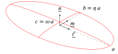
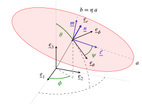
In order to consider different orientations of the ellipsoid with respect to the matrix anisotropy in the sequel, it may be interesting to introduce a parametrization of the three vectors \(\uv{\ell}\), \(\uv{m}\) and \(\n\) by a set of three Euler angles \(\theta\), \(\phi\) and \(\psi\) relatively to the canonical frame (see angle representation in Fig. 1 (b)) such that
\[ \wideeq{\uv{\ell} = (\cos\theta\cos\phi\cos\psi-\sin\phi\sin\psi)\,\ve{1}+ (\cos\theta\sin\phi\cos\psi+\cos\phi\sin\psi)\,\ve{2}- \sin\theta\cos\psi\,\ve{3}} \tag{19}\]
\[ \wideeq{\uv{m} = (-\cos\theta\cos\phi\sin\psi-\sin\phi\cos\psi)\,\ve{1}+ (-\cos\theta\sin\phi\sin\psi+\cos\phi\cos\psi)\,\ve{2}+ \sin\theta\sin\psi\,\ve{3}} \tag{20}\]
\[ \wideeq{\uv{n} = \sin\theta\cos\phi\,\ve{1}+ \sin\theta\sin\phi\,\ve{2}+ \cos\theta\,\ve{3}} \tag{21}\]
As the Eshelby [35], Hill ([44], [45]), concentration or contribution tensors of a unique inclusion embedded in an infinite matrix do not depend on the scale of the inclusion or in other words are independent of any homothety applied on the inclusion, the ellipsoid can be replaced by a normalized one and the tensor \(\uu{A}\) by
\[ \wideeq{\uu{A}= \uv{\ell}\otimes\uv{\ell}+ \eta\,\uv{m}\otimes\uv{m}+ \omega\,\n\otimes\n \quad\textrm{with}\quad \eta=\frac{b}{a} \quad\textrm{and}\quad \omega=\frac{c}{a}} \tag{22}\]
where \(\eta\leq 1\) and \(\omega\leq\eta\) are the aspect ratios of the ellipsoid.
From Fourier analysis or plane-wave expansion ([46], [47]), the Hill tensor related to a matrix stiffness \(\uuuu{C}\) and an ellipsoidal shape characterized by \(\uu{A}\) has been conveniently expressed under the form of integrals over the unit sphere (see Section 9 for conventions of tensor algebra, in particular the definition of the symmetrized tensor product \(\sotimes\) in Eq. 140)
\[ \wideeq{\begin{aligned} \uuuu{P}(\uu{A},\uuuu{C})&=&\frac{\det{\uu{A}}}{4\pi} \int_{\norm{\uv{\xi}}=1} \frac{\uv{\xi}\sotimes (\uv{\xi}\cdot\uuuu{C} \cdot\uv{\xi})^{-1} \sotimes\uv{\xi}}{\norm{\uu{A}\cdot\uv{\xi}}^3} \,\ud S_{\xi}\\ &=& \frac{1}{4\pi} \int_{\norm{\uv{\zeta}}=1} (\uu{A}^{-1}\cdot\uv{\zeta})\sotimes \Big((\uu{A}^{-1}\cdot\uv{\zeta})\cdot\uuuu{C} \cdot(\uu{A}^{-1}\cdot\uv{\zeta})\Big)^{-1} \sotimes(\uu{A}^{-1}\cdot\uv{\zeta}) \,\ud S_{\zeta} \end{aligned}} \tag{23}\]
As shown in [33] and [19] the Hill polarization tensor of the problem related to \(\uu{A}\) and \(\uuuu{C}\) given by Eq. 2 denoted by \(\uuuu{P}=\uuuu{P}(\uu{A},\uuuu{C})\) can be written as the transformation of an associated one \(\uuuu{\tilde{P}}=\uuuu{P}(\uu{\tilde{A}},\uuuu{\tilde{C}})\) related to the isotropic matrix \(\uuuu{\tilde{C}}\) given by Eq. 8 and a transformed ellipsoid of tensor \(\uu{\tilde{A}}\) as
\[ \wideeq{\uuuu{P} = (\uu{\Phi}\sboxtimes\uu{\Phi}): \uuuu{\tilde{P}} :(\uu{\Phi}\sboxtimes\uu{\Phi}) = \uuuu{\Phi}: \uuuu{\tilde{P}} :\uuuu{\Phi} \quad\textrm{with}\quad \uu{\tilde{A}}=\uu{A}\cdot\uu{\Phi}} \tag{24}\]
It is worth remarking that \(\uu{\tilde{A}}\) is not necessarily symmetric but this property is not required since \(\trans{\uu{\tilde{A}}}\cdot\uu{\tilde{A}}\) does actually define the transformed ellipsoid as in Eq. 17.
It follows that the relationships Eq. 24 and Eq. 10 can be used to derive an analogous one for the second Hill tensor defined by \(\uuuu{Q}=\uuuu{C}-\uuuu{C}:\uuuu{P}:\uuuu{C}\) and its associated one \(\uuuu{\tilde{Q}}=\uuuu{\tilde{C}} -\uuuu{\tilde{C}}:\uuuu{\tilde{P}}:\uuuu{\tilde{C}}\)
\[ \wideeq{\uuuu{Q} = (\uu{\Theta}\sboxtimes\uu{\Theta}): \uuuu{\tilde{Q}} :(\uu{\Theta}\sboxtimes\uu{\Theta}) = \uuuu{\Theta}: \uuuu{\tilde{Q}} :\uuuu{\Theta}} \tag{25}\]
As recalled in the next section, this second Hill tensor plays an important role in the determination of the compliance contribution tensor of an elliptical crack defined as an asymptotically flattened ellipsoid.
3 General results on the compliance of a crack in a matrix of arbitrary anisotropy
This section recalls some important background about the crack compliance contribution and opening displacement tensors in an anisotropic matrix before application to the particular case of an EO matrix in Section 4.
A crack is defined here as a void flat pore of elliptical shape (see Fig. 1 (b)), in other words the set of points \(\mathcal{I}_{\uu{A}}\) such that
\[ \wideeq{\x\in\mathcal{I}_{\uu{A}} \quad\Leftrightarrow\quad \x\cdot\n=0 \quad\textrm{and}\quad \left(\x\cdot\uv{\ell}\right)^2+ \left(\frac{\x\cdot\uv{m}}{\eta}\right)^2 \leq a^2} \tag{26}\]
As shown in numerous works ([48], [15], [49], [50], [51]), it is convenient to consider the crack domain as the limit of three-dimensional ellipsoid defined by \(\uu{A}\) as in Eq. 18 in which \(\omega\) tends towards \(0\) (see Fig. 1 (a)) so that
\[ \wideeq{\lim_{\omega\to 0}\uu{A}=a\,\left( \uv{\ell}\otimes\uv{\ell}+ \eta\,\uv{m}\otimes\uv{m}\right)} \tag{27}\]
and apply results from the Eshelby problem with a particular care paid to the limit inducing indeterminate forms as recalled hereafter.
In the case of an ellipsoidal pore of Eq. 17 where \(\uu{A}\) is given by Eq. 18, the compliance contribution tensor in a matrix of arbitrary anisotropic stiffness \(\uuuu{C}\) is obtained by considering a single void ellipsoid embedded in an infinite matrix leading to the following relationship between the average strain tensor in the ellipsoid and the remote stress tensor
\[ \wideeq{<\eps>_{\mathcal{E}_{\uu{A}}}= \frac{\int_{\mathcal{E}_{\uu{A}}}\eps\ud\Omega}{V} =\frac{\int_{\partial\mathcal{E}_{\uu{A}}}\uv{u}\sotimes\uv{N}\ud S} {V} =\uuuu{Q}^{-1}:\Sig \quad\textrm{where}\quad V=\frac{4}{3}\,\pi\,a^3\,\eta\,\omega} \tag{28}\]
However, as put in evidence in [52], the application of Eq. 28 for a flat pore representing an open crack (in other words when \(\omega\ll 1\) in Eq. 22) is not the most relevant choice of strain normalization since the volume \(V\) tends towards \(0\) whereas the strain integral term, more judiciously written as a boundary integral involving the displacement \(\uv{u}\) and local unit normal \(\uv{N}\) fields, has non infinitesimal components on \(\n\otimes\n\), \(\n\sotimes\uv{\ell}\) and \(\n\sotimes\uv{m}\) due to relative movements of crack lips. Indeed, when the aspect ratio \(\omega\) tends towards \(0\), the crack is seen as a plane elliptical interface \(\mathcal{I}_{\uu{A}}\) of normal \(\n\) with two facing lips and the boundary integral can be asymptotically written as a plane surface integral over \(\mathcal{I}_{\uu{A}}\) involving the normalized crack opening displacement \(\uv{b}=(\uv{u}^+-\uv{u}^-)/a\) where \(\uv{u}^+\) and \(\uv{u}^-\) are the displacements of corresponding points on the lips respectively directed towards \(+\n\) (lip \(\mathcal{L}^+\)) and \(-\n\) (lip \(\mathcal{L}^-\)) (see [53])
\[ \wideeq{\int_{\partial\mathcal{E}_{\uu{A}}}\uv{u}\sotimes\uv{N}\ud S \underset{\omega\to 0}{\to} a\,\int_{\mathcal{I}_{\uu{A}}}\uv{b}\sotimes\n\ud S =a\,S\,<\uv{b}>_{\mathcal{I}_{\uu{A}}}\sotimes\n \quad\textrm{where}\quad S=\pi\,a^2\,\eta} \tag{29}\]
A better normalization choice of the compliance contribution of the crack can then be obtained by multiplying Eq. 28 by \(\omega\)
\[ \wideeq{\lim_{\omega\to 0} \omega\,\frac{\int_{\partial\mathcal{E}_{\uu{A}}}\uv{u}\sotimes\uv{N}\ud S} {V} = \frac{a\,\omega}{V} \,\int_{\mathcal{I}_{\uu{A}}}\uv{b}\sotimes\n\ud S = \frac{a\,\omega\,S}{V} \,<\uv{b}>_{\mathcal{I}_{\uu{A}}}\sotimes\n =\frac{3}{4}\,<\uv{b}>_{\mathcal{I}_{\uu{A}}}\sotimes\n =\lim_{\omega\to 0} \omega\,\uuuu{Q}^{-1}:\Sig} \tag{30}\]
This writing presents the double advantage of putting in evidence the role played by the crack compliance tensor \(\uuuu{H}=\lim_{\omega\to 0}\omega\uuuu{Q}^{-1}\) as depicted in the literature ([48], [15], [49], [50], [51]) and its link with the symmetric second-order crack opening displacement tensor \(\uu{B}\) introduced in [7] 2 allowing to relate \(<\uv{b}>_{\mathcal{I}_{\uu{A}}}\) to \(\Sig\cdot\n\)
\[ \wideeq{<\uv{b}>_{\mathcal{I}_{\uu{A}}}=\uu{B}\cdot\Sig\cdot\n =(\uu{B}\sotimes\n):\Sig} \tag{31}\]
Note that the existence of such a relationship Eq. 31 is due to both the linearity of the problem and the fact that only the components \(\Sig\cdot\n\) of \(\Sig\) play a role in the crack opening displacement. Indeed the problem defined by a remote stress tensor is the superposition of a problem of uniform stress within the matrix \(\Sig\) (not producing any crack opening displacement) and a problem in which the lip \(\mathcal{L}^+\) is subjected to \(\Sig\cdot\n\) and \(\mathcal{L}^-\) to \(-\Sig\cdot\n\). In addition the symmetry of \(\uu{B}\) results from an immediate application of Maxwell-Betti reciprocal work theorem.
It follows from the introduction of Eq. 31 in Eq. 30 that
\[ \wideeq{\uuuu{H}= \lim_{\omega\to 0} \omega\,\uuuu{Q}^{-1} =\frac{3}{4}\,\n\sotimes\uu{B}\sotimes\n} \tag{32}\]
As shown in [53], [55], [56] or [25], the structure of \(\uu{B}\) and in particular its dependence or not on the crack orientation govern the symmetry of the macroscopic stiffness of a material embedding several families of cracks. For instance it has been shown in [53] that the \(\uu{B}\) tensor corresponding to a cylindrical crack (2D crack) and an isotropic matrix is purely spherical and thus independent from the crack orientation so that the non interacting approximation (NIA) applied to a material containing such cracks leads to an orthotropic behavior whatever the distribution of crack lengths and orientations. More general complete analytical resolutions of the displacement field in an anisotropic medium wih a single 2D crack are derived in [55], [56] or [25] in which \(\uu{B}\) can also be found as a constant tensor under some conditions (matrix orthotropy).
Whereas Eq. 32 already gives an insight of the particular structure of \(\uuuu{H}=\lim_{\omega\to 0}\omega\uuuu{Q}^{-1}\), a deeper analysis of the latter limit as presented in [50] not only confirms this structure but also provides a practical method for analytical if possible or at least numerical determination of the fourth-order crack compliance for example in the full anisotropic case. The reasoning allowing to analyze \(\lim_{\omega\to 0}\omega\uuuu{Q}^{-1}\) starts with the Taylor expansion of \(\uuuu{P}\) (see expressions Eq. 23) which writes as
\[ \wideeq{\uuuu{P}=\uuuu{P}_0+\omega\,\uuuu{P}_1+\grando{\omega^2} \quad\textrm{with}\quad \uuuu{P}_0=\n\sotimes (\n\cdot\uuuu{C} \cdot\n)^{-1} \sotimes\n} \tag{33}\]
The first order term \(\uuuu{P}_1\) can be expressed under integral forms suitable for a numerical identification if an analytical resolution is out of reach (see [50]). Besides the second Hill tensor is expanded as
\[ \wideeq{\uuuu{Q}=\uuuu{Q}_0+\omega\,\uuuu{Q}_1+\grando{\omega^2} \quad\textrm{with}\quad \uuuu{Q}_0=\uuuu{C}-(\uuuu{C}\cdot\n)\cdot (\n\cdot\uuuu{C} \cdot\n)^{-1} \cdot(\n\cdot\uuuu{C}) \quad\textrm{and}\quad \uuuu{Q}_1=-\uuuu{C}:\uuuu{P}_1:\uuuu{C}} \tag{34}\]
The existence of a non-zero limit of \(\omega\uuuu{Q}^{-1}\) clearly comes from the singularity of \(\uuuu{Q}_0\). On the one hand it is clear that the three last tensors of \(\mathcal{B}^*\) Eq. 146 (i.e. \(\uv{n}\otimes\uv{n}\), \(\sqrt{2}\uv{m}\sotimes\uv{n}\) and \(\sqrt{2}\,\uv{n}\sotimes\uv{\ell}\)) belong to the kernel of \(\uuuu{Q}_0\) and on the other hand the three first of \(\mathcal{B}^*\) (i.e. \(\uv{\ell}\otimes\uv{\ell}\), \(\uv{m}\otimes\uv{m}\) and \(\sqrt{2}\uv{\ell}\sotimes\uv{m}\)) tensors belong to the image of \(\uuuu{Q}_0\) since they are eigenvectors of \(\uuuu{Q}_0:\uuuu{C}^{-1}\). It follows from these observations as well as the major symmetry of Hill tensors that \(\uuuu{Q}_0\) and \(\uuuu{Q}_1\) can be represented by the following matrices in the basis \(\mathcal{B}^*\) (see Eq. 147)
\[ \wideeq{\Mat(\uuuu{Q}_0,\mathcal{B}^*)= \left( \begin{array}{c|c} X&0\\\hline 0&0 \end{array} \right) \quad;\quad \Mat(\uuuu{Q}_1,\mathcal{B}^*)= \left( \begin{array}{c|c} Y_{11}&Y_{12}\\\hline \trans{Y_{12}}&Y_{22} \end{array} \right)} \tag{35}\]
where \(X\) and \(Y_{ij}\) are \(3\times 3\) block matrices such that \(X\), \(Y_{11}\) and \(Y_{22}\) are invertible. This implies that the limit of \(\omega\uuuu{Q}^{-1}\) can be conveniently obtained by a matrix calculation (see detailed proof in [50])
\[ \wideeq{\Mat(\lim_{\omega\to 0}\omega\,\uuuu{Q}^{-1},\mathcal{B}^*) = \lim_{\omega\to 0} \omega\,\left[ \left( \begin{array}{c|c} X&0\\\hline 0&0 \end{array} \right) +\omega \dep{ \begin{array}{c|c} Y_{11}&Y_{12}\\\hline \trans{Y_{12}}&Y_{22} \end{array} } \right]^{-1} = \left( \begin{array}{c|c} 0&0\\\hline 0&Y_{22}^{-1} \end{array} \right)} \tag{36}\]
Interestingly this result puts in evidence that only the components of \(\uuuu{Q}_1\) concerning \(\uv{n}\otimes\uv{n}\), \(\sqrt{2}\uv{m}\sotimes\uv{n}\) and \(\sqrt{2}\uv{n}\sotimes\uv{\ell}\) are needed in this limit, which is consistently equivalent to the existence of \(\uu{B}\) in Eq. 32. In other words, the limit Eq. 36 is calculated by keeping only the submatrix \(Y_{22}\) of \(\uuuu{Q}_1\) in \(\mathcal{B}^*\) (or alternatively the central block surrounded by dashed lines in the matrix of \(\uuuu{Q}_1\) in \(\mathcal{B}\) as shown in Eq. 147). In general the fourth-order compliance contribution tensor and eventually the second-order crack opening displacement tensor may be numerically estimated (see a strategy developed in [50]) if not analytically available.
In addition it is also worth noting that if the planes normal to \(\uv{\ell}\), \(\uv{m}\) and \(\uv{n}\) are material symmetry planes, the matrix \(Y_{22}\) is expected to be diagonal, which also corresponds to a diagonal \(\uu{B}\) tensor
\[ \wideeq{\uu{B}= B_{nn}\,\uv{n}\otimes\uv{n} + B_{mm}\,\uv{m}\otimes\uv{m} + B_{\ell\ell}\,\uv{\ell}\otimes\uv{\ell}} \tag{37}\]
In this case and only in this case where \(\uu{B}\) is diagonal as in Eq. 37, the correspondence between the components of \(\uu{B}\) and those of \(\uuuu{Q}_1\) in the frame \((\uv{\ell},\uv{m},\uv{n})\) is straightforward
\[ \wideeq{B_{nn}=\frac{4}{3}\,\frac{1}{\left(Q_1\right)_{nnnn}} \quad\textrm{;}\quad B_{mm}=\frac{4}{3}\,\frac{1}{\left(Q_1\right)_{mnmn}} \quad\textrm{;}\quad B_{\ell\ell}=\frac{4}{3}\,\frac{1}{\left(Q_1\right)_{n\ell n\ell}}} \tag{38}\]
In the most general case of anisotropy and arbitrary orientation of the crack, the principal directions of \(\uu{B}\) may not be aligned with the axes of the crack. Another interesting issue concerning \(\uu{B}\) is its dependence or not on the crack orientation. It has been shown for example in the framework of 2D orthotropy in [55] that \(\uu{B}\) is not correlated to the crack orientation. Besides a numerical calculation has been exploited in [26] to check the validity of this result in 3D: it comes out that the dependence of \(\uu{B}\) on the crack orientation remains weak in the case of an EO matrix. This result can be reconsidered with the following result providing an analytical expression of \(\uu{B}\) in an EO matrix.
4 Compliance contribution and opening displacement tensors of a crack embedded in an EO matrix
4.1 Derivation from the transformation method
This section develops the methodology to build the crack contribution tensor in an EO matrix from that of a transformed crack in an associated isotropic matrix.
As shown in the literature ([48], [15], [53]), [49], [50], [41]), the effect of an open crack in the compliance of the infinite medium in which it is embedded relies on the singularity of \(\uuuu{Q}\) when \(\omega\) is set to \(0\) and, as recalled in Section 3, the relevant crack contribution is obtained from the limit Eq. 32.
The calculation of the fourth-order compliance contribution tensor Eq. 32 can be obtained by observing that the inverse of the transformation put in evidence in Eq. 25 leads to
\[ \wideeq{\omega\, \uuuu{Q}^{-1}= (\uu{\Phi}\sboxtimes\uu{\Phi}): \left[ \omega\, \uuuu{\tilde{Q}}^{-1}\right] :(\uu{\Phi}\sboxtimes\uu{\Phi})} \tag{39}\]
and gives the limit
\[ \wideeq{\uuuu{H}= \lim_{\omega\to 0} \omega\, \uuuu{Q}^{-1}= (\uu{\Phi}\sboxtimes\uu{\Phi}): \left[ \lim_{\omega\to 0} \omega\, \uuuu{\tilde{Q}}^{-1}\right] :(\uu{\Phi}\sboxtimes\uu{\Phi})} \tag{40}\]
Indeed the calculation of \(\uuuu{\tilde{Q}}\) in the right hand side of Eq. 40 is simplified by the fact that it corresponds to an isotropic matrix. However the limit involving \(\uuuu{\tilde{Q}}\) does not actually represent the crack compliance tensor in the transformed configuration insofar as the aspect ratio \(\omega\) is not the aspect ratio of the transformed ellipsoid. As recalled in Eq. 24, this transformed ellipsoid is characterized by the tensor \(\uu{\tilde{A}}=\uu{A}\cdot\uu{\Phi}\). Hence, using Eq. 22, this tensor asymptotically defines a crack since
\[ \wideeq{\trans{\uu{\tilde{A}}}\cdot\uu{\tilde{A}}= (\uu{\Phi}\cdot\uv{\ell}) \otimes(\uu{\Phi}\cdot\uv{\ell})+ \eta^2\, (\uu{\Phi}\cdot\uv{m}) \otimes(\uu{\Phi}\cdot\uv{m}) + \omega^2\, (\uu{\Phi}\cdot\n) \otimes(\uu{\Phi}\cdot\n)} \tag{41}\]
tends towards a tensor of rank 2 when \(\omega\) tends towards 0. However since \(\uu{\Phi}\) is a priori not isometric, \(\omega\) does not correspond to the ratio between the lower and greater eigenvalues of \(\trans{\uu{\tilde{A}}}\cdot\uu{\tilde{A}}\). The right infinitesimal aspect ratio governed by \(\uu{\tilde{A}}\) can be obtained by means of the algorithm developed herebelow.
First \(\lim_{\omega\to 0}\trans{\uu{\tilde{A}}}\cdot\uu{\tilde{A}}\) is diagonalized as
\[ \wideeq{\lim_{\omega\to 0}\trans{\uu{\tilde{A}}}\cdot\uu{\tilde{A}} = (\uu{\Phi}\cdot\uv{\ell}) \otimes(\uu{\Phi}\cdot\uv{\ell})+ \eta^2\, (\uu{\Phi}\cdot\uv{m}) \otimes(\uu{\Phi}\cdot\uv{m}) = \tilde{a}^2\,\uv{\tilde{\ell}}\otimes\uv{\tilde{\ell}}+ \tilde{b}^2\,\uv{\tilde{m}}\otimes\uv{\tilde{m}}} \tag{42}\]
where \(\tilde{a}^2\), \(\tilde{b}^2\) (\(0\leq\tilde{b}\leq\tilde{a}\)) and \(0\) are the eigenvalues associated to the orthonormal eigenvectors \(\uv{\tilde{\ell}}\), \(\uv{\tilde{m}}\) and \(\uv{\tilde{n}}\).
The direction \(\uv{\tilde{n}}\) is obviously normal to the transformed crack but is not necessarily oriented along \(\uu{\Phi}\cdot\n\). Nevertheless this last vector can be decomposed as
\[ \wideeq{\uu{\Phi}\cdot\uv{n}= \tilde{\gamma}\,\uv{\tilde{n}}+ \tilde{w}_{m}\,\uv{\tilde{m}}+ \tilde{w}_{\ell}\,\uv{\tilde{\ell}} \quad\textrm{with}\quad \tilde{w}_{m}=\uv{\tilde{m}}\cdot \uu{\Phi}\cdot\uv{n} \;\textrm{,}\quad \tilde{w}_{\ell}=\uv{\tilde{\ell}}\cdot \uu{\Phi}\cdot\uv{n} \;\textrm{,}\quad \tilde{\gamma}= \norm{\uu{\Phi}\cdot\uv{n} -\tilde{w}_{m}\,\uv{\tilde{m}} -\tilde{w}_{\ell}\,\uv{\tilde{\ell}} }} \tag{43}\]
where \(\uv{\tilde{n}}\) and \(\tilde{\gamma}\) (necessarily non-zero since \(\uu{\Phi}\) is inversible) also satisfy
\[ \wideeq{\uv{\tilde{n}}=\frac{1}{\tilde{\gamma}}\, \left(\uu{\Phi}\cdot\uv{n} -\tilde{w}_{m}\,\uv{\tilde{m}} -\tilde{w}_{\ell}\,\uv{\tilde{\ell}}\right) \quad\textrm{and}\quad \tilde{\gamma}=\uv{\tilde{n}}\cdot\uu{\Phi}\cdot\n} \tag{44}\]
Note that the unit eigenvectors of the symmetric tensor Eq. 42 can be changed by their opposite vectors so there is no inconsistency to define \(\uv{\tilde{n}}\) as in Eq. 44 and \(\uv{\tilde{\ell}}\) and \(\uv{\tilde{m}}\) such that \((\uv{\tilde{\ell}},\uv{\tilde{m}},\uv{\tilde{n}})\) forms an orthonormal frame of positive orientation.
Inserting Eq. 42 and Eq. 43 in Eq. 41 yields
\[ \wideeq{\trans{\uu{\tilde{A}}}\cdot\uu{\tilde{A}}\underset{\omega\to 0}{\sim} \tilde{a}^2\,\uv{\tilde{\ell}}\otimes\uv{\tilde{\ell}}+ \tilde{b}^2\,\uv{\tilde{m}}\otimes\uv{\tilde{m}} + \omega^2\,\tilde{\gamma}^2\,\uv{\tilde{n}}\otimes\uv{\tilde{n}} +\omega^2\,\uu{\Delta}} \tag{45}\]
where
\[ \wideeq{\uu{\Delta} = \tilde{\gamma}\,\uv{\tilde{n}}\otimes(\tilde{w}_{\ell}\,\uv{\tilde{\ell}} +\tilde{w}_{m}\,\uv{\tilde{m}}) + \tilde{\gamma}\,(\tilde{w}_{\ell}\,\uv{\tilde{\ell}} +\tilde{w}_{m}\,\uv{\tilde{m}})\otimes\uv{\tilde{n}} + (\tilde{w}_{\ell}\,\uv{\tilde{\ell}}+\tilde{w}_{m}\,\uv{\tilde{m}})\otimes (\tilde{w}_{\ell}\,\uv{\tilde{\ell}}+\tilde{w}_{m}\,\uv{\tilde{m}})} \tag{46}\]
Now it makes no doubt that the tensor \(\uu{\Delta}\) does not play any role in the definition of the asymptotic crack defined by \(\uu{\tilde{A}}\) and the aspect ratios asymptotically associated to \(\uu{\tilde{A}}\) are
\[ \wideeq{\tilde{\eta}=\frac{\tilde{b}}{\tilde{a}} \quad\textrm{and}\quad \tilde{\omega}=\omega\,\frac{\tilde{\gamma}}{\tilde{a}}} \tag{47}\]
Finally the actual transformation of crack compliance writes
\[ \wideeq{\uuuu{H}= \frac{\tilde{a}}{\tilde{\gamma}} \, (\uu{\Phi}\sboxtimes\uu{\Phi}): \uuuu{\tilde{H}} :(\uu{\Phi}\sboxtimes\uu{\Phi}) \quad\textrm{with}\quad \uuuu{H}=\lim_{\omega\to 0}\omega\,\uuuu{Q}^{-1} \quad\textrm{and}\quad \uuuu{\tilde{H}}=\lim_{\tilde{\omega}\to 0} \tilde{\omega}\,\uuuu{\tilde{Q}}^{-1}} \tag{48}\]
which puts in evidence the correction factor \(\frac{\tilde{a}}{\tilde{\gamma}}\) and where the crack compliance appearing in the right hand side \(\uuuu{\tilde{H}}\) now actually corresponds to the crack defined by \(\uu{\tilde{A}}\) embedded in an isotropic matrix (see Section 11 for practical calculation of this term). Note that \(\uu{\tilde{A}}\) can be replaced in Eq. 48 by the equivalent normalized asymptotic expression
\[ \wideeq{\uu{\tilde{A}}\to \uv{\tilde{\ell}}\otimes\uv{\tilde{\ell}}+ \tilde{\eta}\,\uv{\tilde{m}}\otimes\uv{\tilde{m}} +\tilde{\omega}\,\uv{\tilde{n}}\otimes\uv{\tilde{n}}} \tag{49}\]
The result Eq. 48 can conveniently be transformed into a relationship between crack opening displacement tensors thanks to the identity Eq. 32. For this purpose it is worth observing from a contraction of Eq. 42 to the left and to the right by \(\uv{\tilde{n}}\) that
\[ \wideeq{\left(\uv{\tilde{n}}\cdot\uu{\Phi}\cdot\uv{\ell}\right)^2 + \eta^2\, \left(\uv{\tilde{n}}\cdot\uu{\Phi}\cdot\uv{m}\right)^2 =0 \quad\Rightarrow\quad \uv{\tilde{n}}\cdot\uu{\Phi}\cdot\uv{\ell} =\uv{\tilde{n}}\cdot\uu{\Phi}\cdot\uv{m}=0} \tag{50}\]
which means by symmetry of \(\uu{\Phi}\) that \(\uu{\Phi}\cdot\uv{\tilde{n}}\) is colinear to \(\n\) and thus writes by consistency with Eq. 44
\[ \wideeq{\uu{\Phi}\cdot\uv{\tilde{n}}=\tilde{\gamma}\,\n} \tag{51}\]
It may be interesting to note here that the normal of the transformed crack \(\uv{\tilde{n}}\) can be directly obtained without requiring to calculate \(\uv{\tilde{\ell}}\) and \(\uv{\tilde{m}}\) by
\[ \wideeq{\uv{\tilde{n}}=\frac{\uu{\Phi}^{-1}\cdot\n}{\norm{\uu{\Phi}^{-1}\cdot\n}} =\frac{\uu{\Theta}\cdot\n}{\norm{\uu{\Theta}\cdot\n}}} \tag{52}\]
Introducing \(\uu{\tilde{B}}\) associated to \(\lim_{\tilde{\omega}\to 0} \tilde{\omega}\uuuu{\tilde{Q}}^{-1}\) by Eq. 32 and calculable by following Section 11 since \(\uuuu{\tilde{C}}\) is isotropic, it comes that Eq. 48 yields, thanks to Eq. 51
\[ \wideeq{\lim_{\omega\to 0} \omega\, \uuuu{Q}^{-1}= \frac{3}{4} \,\tilde{a}\,\tilde{\gamma}\; \n\sotimes \left(\uu{\Phi}\cdot \uu{\tilde{B}} \cdot\uu{\Phi}\right) \sotimes\n} \tag{53}\]
which finally implies
\[ \wideeq{\uu{B}= \tilde{a}\,\tilde{\gamma}\; \uu{\Phi}\cdot \uu{\tilde{B}} \cdot\uu{\Phi}} \tag{54}\]
Note that a relationship between parameters can be obtained by observing that the determinants of Eq. 41 and Eq. 45 are identical. Indeed using \(\det{\uu{\Phi}}=1\) implying that \(\det{(\trans{\uu{\tilde{A}}}\cdot\uu{\tilde{A}})}= \det{(\trans{\uu{A}}\cdot\uu{A})}\) and keeping the predominant terms in \(\omega\) of the determinant of Eq. 45, it comes out that
\[ \wideeq{\det{(\trans{\uu{A}}\cdot\uu{A})}=\eta^2\,\omega^2 \quad\textrm{and}\quad \det{(\trans{\uu{\tilde{A}}}\cdot\uu{\tilde{A}})}= \tilde{a}^2\,\tilde{b}^2\,\tilde{\gamma}^2\,\omega^2 \quad\Rightarrow\quad \tilde{a}\,\tilde{b}\,\tilde{\gamma}=\eta} \tag{55}\]
So Eq. 54 alternatively writes
\[ \wideeq{\uu{B}= \frac{\eta}{\tilde{b}}\; \uu{\Phi}\cdot \uu{\tilde{B}} \cdot\uu{\Phi}} \tag{56}\]
The hereabove algorithm allows the derivation of the second-order opening displacement tensor of an elliptical crack arbitrarily oriented in an EO matrix from an associated problem of a transformed crack in an adequate isotropic matrix. A particular attention must be paid to the fact that \(\uu{\Phi}\) does not directly apply as the transformation between crack opening displacement tensors in Eq. 54: indeed a mutiplicative correction must be considered for \(\uu{B}\). One of the major interest of this calculation is that it provides the compliance effect of a crack which is not particularly aligned in some symmetry plane of the anisotropic matrix. Although the EO behavior does not actually cover the whole range of possible anisotropy, it has been shown in [33] and [34] that it could accurately approximate certain orthotropic materials. So the present methodology can be used to approximate the compliance contribution tensor of a crack in such a material whatever the relative orientation of the crack with respect to the matrix symmetry planes.
Before considering specific analytical cases, it is worth commenting the general structure of \(\uu{B}\) in Eq. 54. First it is shown in Section 11 that \(\uu{\tilde{B}}\) is diagonal in the frame of the transformed crack
\[ \wideeq{\uu{\tilde{B}}= \tilde{B}_{nn}\,\uv{\tilde{n}}\otimes\uv{\tilde{n}} + \tilde{B}_{mm}\,\uv{\tilde{m}}\otimes\uv{\tilde{m}} + \tilde{B}_{\ell\ell}\,\uv{\tilde{\ell}}\otimes\uv{\tilde{\ell}}} \tag{57}\]
Hence, thanks to Eq. 54 and Eq. 51, \(\uu{B}\) writes
\[ \wideeq{\uu{B}= \tilde{a}\,\tilde{\gamma}\, \left( \tilde{\gamma}^2\,\tilde{B}_{nn}\,\uv{n}\otimes\uv{n} + \tilde{B}_{mm}\, (\uu{\Phi}\cdot\uv{\tilde{m}}) \otimes (\uu{\Phi}\cdot\uv{\tilde{m}}) + \tilde{B}_{\ell\ell}\, (\uu{\Phi}\cdot\uv{\tilde{\ell}}) \otimes (\uu{\Phi}\cdot\uv{\tilde{\ell}}) \right)} \tag{58}\]
In the general case of arbitrary orientations of the crack and the matrix anisotropy (\(\uu{D}\) tensor), neither \(\uu{\Phi}\cdot\uv{\tilde{m}}\) nor \(\uu{\Phi}\cdot\uv{\tilde{\ell}}\) are a priori aligned with any principal direction of the crack and Eq. 43 highlights that these vectors may have a non-zero component on \(\n\). The components of \(\uu{B}\) including off-diagonal terms can be expressed in the principal axes of the crack
\[ \wideeq{B_{\ell\ell} = \tilde{a}\,\tilde{\gamma}\, \left( \tilde{B}_{mm}\,(\uv{\ell}\cdot\uu{\Phi}\cdot\uv{\tilde{m}})^2 + \tilde{B}_{\ell\ell}\,(\uv{\ell}\cdot\uu{\Phi}\cdot\uv{\tilde{\ell}})^2 \right)} \tag{59}\]
\[ \wideeq{B_{mm} = \tilde{a}\,\tilde{\gamma}\, \left( \tilde{B}_{mm}\,(\uv{m}\cdot\uu{\Phi}\cdot\uv{\tilde{m}})^2 + \tilde{B}_{\ell\ell}\,(\uv{m}\cdot\uu{\Phi}\cdot\uv{\tilde{\ell}})^2 \right)} \tag{60}\]
\[ \wideeq{B_{nn} = \tilde{a}\,\tilde{\gamma}\, \left( \tilde{\gamma}^2\,\tilde{B}_{nn}+ \tilde{B}_{mm}\,(\uv{n}\cdot\uu{\Phi}\cdot\uv{\tilde{m}})^2 + \tilde{B}_{\ell\ell}\,(\uv{n}\cdot\uu{\Phi}\cdot\uv{\tilde{\ell}})^2 \right)} \tag{61}\]
\[ \wideeq{B_{mn}=B_{nm} = \tilde{a}\,\tilde{\gamma}\, \left( \tilde{B}_{mm}\,(\uv{m}\cdot\uu{\Phi}\cdot\uv{\tilde{m}}) \,(\uv{n}\cdot\uu{\Phi}\cdot\uv{\tilde{m}}) + \tilde{B}_{\ell\ell}\,(\uv{m}\cdot\uu{\Phi}\cdot\uv{\tilde{\ell}}) \,(\uv{n}\cdot\uu{\Phi}\cdot\uv{\tilde{\ell}}) \right)} \tag{62}\]
\[ \wideeq{B_{n\ell}=B_{\ell n} = \tilde{a}\,\tilde{\gamma}\, \left( \tilde{B}_{mm}\,(\uv{n}\cdot\uu{\Phi}\cdot\uv{\tilde{m}}) \,(\uv{\ell}\cdot\uu{\Phi}\cdot\uv{\tilde{m}}) + \tilde{B}_{\ell\ell}\,(\uv{n}\cdot\uu{\Phi}\cdot\uv{\tilde{\ell}}) \,(\uv{\ell}\cdot\uu{\Phi}\cdot\uv{\tilde{\ell}}) \right)} \tag{63}\]
\[ \wideeq{B_{\ell m}=B_{m \ell} = \tilde{a}\,\tilde{\gamma}\, \left( \tilde{B}_{mm}\,(\uv{\ell}\cdot\uu{\Phi}\cdot\uv{\tilde{m}}) \,(\uv{m}\cdot\uu{\Phi}\cdot\uv{\tilde{m}}) + \tilde{B}_{\ell\ell}\,(\uv{\ell}\cdot\uu{\Phi}\cdot\uv{\tilde{\ell}}) \,(\uv{m}\cdot\uu{\Phi}\cdot\uv{\tilde{\ell}}) \right)} \tag{64}\]
Depending on the orientations of \(\uu{\Phi}\) (i.e. of \(\uu{D}\)) and the crack shape and direction, the terms of the type \(\uv{u}\cdot\uu{\Phi}\cdot\uv{v}\) appearing in Eq. 59–Eq. 64 can take non-zero values. Besides particular cases, the principal axes of the crack are not eigenvectors of \(\uu{B}\), which produces possible couplings between normal and shear modes. In fact it is possible to show that a necessary and sufficient condition to cancel out the couplings between the normal mode and the shear modes (i.e. \(B_{mn}=B_{n\ell}=0\)) is that the crack normal \(\n\) is an eigenvector of \(\uu{D}\) (or \(\uu{\Phi}\)) or in other words the crack plane is a symmetry plane of the matrix behavior, whatever the orientation of the in-plane principal axes of the crack.
Sufficient condition If \(\uv{n}\) is an eigenvector of \(\uu{\Phi}\) then Eq. 51 ensures that \(\uv{\tilde{n}}=\uv{n}\) and \(\tilde{\gamma}\) is one of the parameters \(1/\sqrt{d_i}\). In addition the crack plane spanned by \(\uv{\ell}\) and \(\uv{m}\) is stable by \(\uu{\Phi}\) and \(\uv{\tilde{\ell}}\) and \(\uv{\tilde{m}}\) also lie in this plane. It follows that \(\uv{n}\cdot\uu{\Phi}\cdot\uv{\tilde{m}}\) and \(\uv{n}\cdot\uu{\Phi}\cdot\uv{\tilde{\ell}}\) are both zero and so are \(B_{mn}\) in Eq. 62 and \(B_{n\ell}\) in Eq. 63.
Necessary condition Reciprocally, it is assumed that \(B_{mn}=B_{n\ell}=0\). Recalling that \(\tilde{a}\tilde{\gamma}\) is not zero, Eq. 62 and Eq. 63 imply the following linear system
\[ \wideeq{\left( \begin{array}{cc} \uv{m}\cdot\uu{\Phi}\cdot\uv{\tilde{m}} & \uv{m}\cdot\uu{\Phi}\cdot\uv{\tilde{\ell}} \\ \uv{\ell}\cdot\uu{\Phi}\cdot\uv{\tilde{m}} & \uv{\ell}\cdot\uu{\Phi}\cdot\uv{\tilde{\ell}} \end{array} \right) \left( \begin{array}{c} \tilde{B}_{mm}\,\uv{n}\cdot\uu{\Phi}\cdot\uv{\tilde{m}} \\ \tilde{B}_{\ell\ell}\,\uv{n}\cdot\uu{\Phi}\cdot\uv{\tilde{\ell}} \end{array} \right) = \left( \begin{array}{c} 0 \\ 0 \end{array} \right)} \tag{65}\]
The inversibility of the \(2\times 2\) matrix involved in Eq. 65 can be analyzed by introducing its determinant
\[ \wideeq{\Delta_1=(\uv{\ell}\cdot\uu{\Phi}\cdot\uv{\tilde{\ell}}) (\uv{m}\cdot\uu{\Phi}\cdot\uv{\tilde{m}}) -(\uv{m}\cdot\uu{\Phi}\cdot\uv{\tilde{\ell}}) (\uv{\ell}\cdot\uu{\Phi}\cdot\uv{\tilde{m}})} \tag{66}\]
A new system can be formed by putting together this Eq. 66 with that obtained by contraction of Eq. 42 to the left by \(\uv{\tilde{\ell}}\) and to the right by \(\uv{\tilde{m}}\)
\[ \wideeq{\left( \begin{array}{cc} \uv{m}\cdot\uu{\Phi}\cdot\uv{\tilde{m}} & -\uv{\ell}\cdot\uu{\Phi}\cdot\uv{\tilde{m}} \\ \uv{\ell}\cdot\uu{\Phi}\cdot\uv{\tilde{m}} & \eta^2\,\uv{m}\cdot\uu{\Phi}\cdot\uv{\tilde{m}} \end{array} \right) \left( \begin{array}{c} \uv{\ell}\cdot\uu{\Phi}\cdot\uv{\tilde{\ell}} \\ \uv{m}\cdot\uu{\Phi}\cdot\uv{\tilde{\ell}} \end{array} \right) = \left( \begin{array}{c} \Delta_1 \\ 0 \end{array} \right)} \tag{67}\]
of determinant
\[ \wideeq{\Delta_2=\eta^2\,(\uv{m}\cdot\uu{\Phi}\cdot\uv{\tilde{m}})^2+ (\uv{\ell}\cdot\uu{\Phi}\cdot\uv{\tilde{m}})^2} \tag{68}\]
The \(2\times 2\) matrix of Eq. 67 is necessarily inversible. Indeed the cancellation of \(\Delta_2\) would imply that \(\uu{\Phi}\cdot\uv{\tilde{m}}\) be orthogonal to both \(\uv{\ell}\) and \(\uv{m}\) and thus colinear to \(\uv{n}\), which would entail a linear dependance between \(\uv{\tilde{m}}\) and \(\uv{\tilde{n}}\) resulting from Eq. 51 and the inversibility of \(\uu{\Phi}\). The same reasoning applied on \(\uu{\Phi}\cdot\uv{\tilde{\ell}}\) shows that the vector of the left hand side of Eq. 67 is not zero. It follows that the right hand side of Eq. 67 and thus \(\Delta_1\) cannot cancel out. This means that the \(2\times 2\) matrix involved in Eq. 65 is inversible and, as a consequence, since \(\tilde{B}_{mm}\) and \(\tilde{B}_{\ell\ell}\) are stricly positive, \(\uu{\Phi}\cdot\uv{n}\) is orthogonal to both \(\uv{\ell}\) and \(\uv{m}\) and thus colinear to \(\uv{\tilde{n}}\), which also implies \(\uu{\Phi}\cdot\uv{n}=\tilde{\gamma}\uv{\tilde{n}}\) by consistency with Eq. 44. Invoking the relationship Eq. 51 finally leads to the sought result \(\uu{\Phi}^2\cdot\uv{n}=\uu{D}\cdot\uv{n}=\tilde{\gamma}^2\uv{n}\).
The coupling between shear modes (i.e. \(B_{\ell m}\)) can also be analyzed. If the principal axes of the crack are aligned with those of \(\uu{D}\), then Eq. 42 implies that \(\uu{\tilde{\ell}}\) and \(\uu{\tilde{m}}\) are respectively equal to \(\uu{\ell}\) and \(\uu{m}\) or \(\uu{m}\) and \(\uu{\ell}\) depending on the order of the respective eigenvalues and \(\eta\), which means that either \(\uv{\ell}\cdot\uu{\Phi}\cdot\uv{\tilde{m}}= \uv{m}\cdot\uu{\Phi}\cdot\uv{\tilde{\ell}}=0\) or \(\uv{m}\cdot\uu{\Phi}\cdot\uv{\tilde{m}}= \uv{\ell}\cdot\uu{\Phi}\cdot\uv{\tilde{\ell}}=0\). Hence it results from Eq. 64 that in any case \(B_{\ell m}=0\). The reciprocal assertion is not true. Indeed it is easy to find a set of parameters of the matrix behavior (\(d_1\), \(d_2\), \(d_3\), \(\nu\)) and crack shape and orientation (\(\eta\), \(\theta\), \(\phi\), \(\psi\)) which allows to cancel out \(B_{\ell m}=0\) without alignment of the principal axes of the crack with those of \(\uu{D}\). Indeed examples in Fig. 7 (a) and Fig. 7 (b) in Section 5.3 representing the components of \(\uu{B}\) in the local crack frame against the angle \(\phi\) (see angles in Fig. 1 (b)), for given parameters \(d_1\), \(d_2\), \(d_3\), \(\nu\), \(\eta\), \(\theta\), and \(\psi\) indicated in the caption, shows that there exists an intermediary value of \(\phi\) such that \(B_{\ell m}=0\). In fact it is even possible to cancel out any other off-diagonal components namely \(B_{mn}=0\) or \(B_{n\ell}=0\) but these conditions are obtained for different values of \(\phi\) since the choice of \(\theta\neq 0\) prevents \(\uv{n}\) from being aligned with one of the principal directions of \(\uu{B}\) and thus \(B_{mn}\) and \(B_{n\ell}\) cannot simultaneously vanish by virtue of the previous demonstration.
The \(\uu{B}\) tensor Eq. 58 can also be decomposed in the principal axes of the matrix (the superscript \(^D\) is used to denote the component in this frame and can be withdrawn if the principal axes of \(\uu{D}\) are chosen as the canonical axes)
\[ \wideeq{B^D_{ij}=\uv{e}^D_i\cdot\uu{B}\cdot\uv{e}^D_j= \tilde{a}\,\tilde{\gamma}\, \left( \tilde{\gamma}^2\,\tilde{B}_{nn}\,n^D_i\,n^D_j + \tilde{B}_{mm}\,\frac{\tilde{m}^D_i\,\tilde{m}^D_j}{\sqrt{d_i\,d_j}} + \tilde{B}_{\ell\ell}\,\frac{\tilde{\ell}^D_i\,\tilde{\ell}^D_j}{\sqrt{d_i\,d_j}} \right)} \tag{69}\]
If the crack is arbitrarily oriented, these components may all take non-zero values.
4.2 Approximation by the compliance contribution tensor of an ellipsoid with finite aspect ratio
The previous sections have put in evidence the interest of the crack compliance tensor defined as the limit Eq. 32 and the strategy to calculate it for an EO matrix. As already mentioned, the reasoning is based on the description of the crack as an ellipsoid for which the aspect ratio tends towards 0. However it may be interesting to raise the issue of the relevance of the replacement of the limit Eq. 32 by the compliance tensor of finite aspect ratio or, in other words, the issue about the existence of a threshold below which a flat ellipsoid could be considered as a crack allowing the use of the crack compliance or opening displacement tensor. The idea is then in fact to reach a given tolerance on the relative error between the crack compliance tensor \(\uuuu{H}\) and the tensor \(\uuuu{\omega\uuuu{Q}^{-1}}\) for a sufficiently small aspect ratio \(\omega\). This question is of crucial importance in order to decide whether a flat pore can practically and mathematically be assimilated to a crack in terms of compliance contribution, depending on the anisotropy of the matrix and on the planar shape of the crack (parameter \(\eta\)). However a satisfactory answer may not be as easy to bring since the relative error can be calculated componentwise relatively to a given frame and each component may have a different Taylor expansion when \(\omega\) tends towards 0
\[ \wideeq{\epsilon_{ijkl}(\omega)=\frac{\left(\omega\,\uuuu{Q}^{-1}\right)_{ijkl} -H_{ijkl}}{H_{ijkl}} =\rho_{ijkl}\,\omega+\grando{\omega^2}} \tag{70}\]
The existence of a universal threshold may be questioned if the error depends on the component. The case of an isotropic matrix leading to analytical expressions of \(\rho_{ijkl}\) and that of an EO matrix are successively examined.
In the case of an isotropic matrix, the second Hill tensor can be found in the literature (see [41] or [33]) and the expression of \(\uuuu{H}\) is recalled in Eq. 166 so that their relevant components in the crack frame (\(nnnn\), \(mnmn\), \(n\ell n\ell\)) are plotted against the aspect ratio \(\omega\) in Fig. 2 (a) for \(\nu=0.2\) and \(\eta=0.1\) as well as \(\eta=1\). The corresponding relative errors \(\epsilon_{nnnn}\), \(\epsilon_{mnmn}\) and \(\epsilon_{n\ell n\ell}\) are plotted against the aspect ratio \(\omega\) in Fig. 2 (b). Moreover the Taylor expansions of these relative errors in the vicinity of \(\omega=0\) are determined by the coefficients \(\rho_{ijkl}\) in the crack frame Eq. 70 which are given by
\[ \wideeq{\rho_{nnnn} = \frac{\mathcal{G}^2+2\,\nu\,(3-4\,\nu^2)\,\eta^2\,\mathcal{G}\,\mathcal{H} +\eta^4\,\mathcal{H}^2} {2\,(1-\nu^2)\,\eta\,(\mathcal{G}+\eta^2\,\mathcal{H})} \quad \left( \underset{\eta\to 1}{\to} \frac{\pi\,(1+2\,\nu)^2}{8\,(1+\nu)} \right)} \tag{71}\]
\[ \wideeq{\rho_{mnmn} = \frac{2\,+(1-\nu)\,\eta^2} {\eta\,\left(\mathcal{G}+(1-\nu)\,\eta^2\,\mathcal{H}\right)} \quad \left( \underset{\eta\to 1}{\to} \frac{4\,(3-\nu)}{\pi\,(2-\nu)} \right)} \tag{72}\]
\[ \wideeq{\rho_{n\ell n\ell} = \frac{1-\nu+2\,\eta^2} {\eta\,\left((1-\nu)\,\mathcal{G}+\eta^2\,\mathcal{H}\right)} \quad \left( \underset{\eta\to 1}{\to} \frac{4\,(3-\nu)}{\pi\,(2-\nu)} \right)} \tag{73}\]
where \(\mathcal{G}\) and \(\mathcal{H}\) defined in Eq. 163 are functions of \(\eta\) and of the complete elliptic integrals \(\mathcal{K}=\mathcal{K}(\sqrt{1-\eta^2})\) and \(\mathcal{E}=\mathcal{E}(\sqrt{1-\eta^2})\). These coefficients \(\rho_{nnnn}\), \(\rho_{mnmn}\) and \(\rho_{n\ell n\ell}\) are plotted against the shape parameter \(\eta\) for \(\nu=0.2\) in Fig. 2 (c).
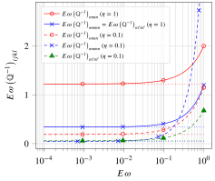
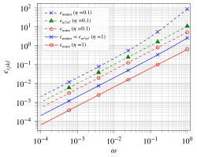
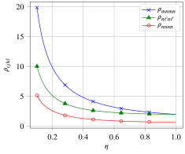
The expressions Eq. 71, Eq. 72 and Eq. 73 and Fig. 2 (b) and Fig. 2 (c) clearly highlight that the level of relative error depends on the shape of the crack (parameter \(\eta\)) and on the component of \(\uuuu{H}\) under consideration (tensile or shear effect). As a consequence, as obviously deduced from Fig. 2 (b), the threshold on \(\omega\) that is required to reach a given error is not universal. For instance an error of less than \(1\%\) can be obtained for \(\omega<0.016\) for the tensile compliance \(H_{nnnn}\) but \(\omega<0.005\) is necessary to comply with this error condition for the shear compliance \(H_{mnmn}=H_{n\ell n\ell}\) when \(\eta=1\) (circular crack). In addition these shear compliances are affected by different levels of errors when the crack is not circular anymore as demonstrated by Fig. 2 (c).
Whereas the isotropic matrix does not allow to identify a universal relevant threshold on the aspect ratio, it is obviously expected that the same conclusion shall hold in presence of an EO matrix. However the issue of the relationships between errors of approximation made on the problem of a crack in an EO matrix and their counterparts in the associated transformed isotropic problem can be raised. The relevant relationship between the transformed compliance contribution tensors corresponding to ellipsoids of finite aspect ratio is obtained by combining Eq. 39 and Eq. 47 (which is only asymptotically valid in the vicinity of \(\omega=0\)) so that
\[ \wideeq{\omega\, \uuuu{Q}^{-1}\approx \frac{\tilde{a}}{\tilde{\gamma}}\, (\uu{\Phi}\sboxtimes\uu{\Phi}): \left[ \tilde{\omega}\, \uuuu{\tilde{Q}}^{-1}\right] :(\uu{\Phi}\sboxtimes\uu{\Phi})} \tag{74}\]
and the difference with the limit Eq. 48 is
\[ \wideeq{\omega\, \uuuu{Q}^{-1} -\uuuu{H} \approx \frac{\tilde{a}}{\tilde{\gamma}}\, (\uu{\Phi}\sboxtimes\uu{\Phi}): \left[ \tilde{\omega}\, \uuuu{\tilde{Q}}^{-1} -\uuuu{\tilde{H}}\right] :(\uu{\Phi}\sboxtimes\uu{\Phi})} \tag{75}\]
The relationship Eq. 75 shows that the components in an arbitrary frame of the difference between the crack compliance tensor and its approximation by the compliance contribution tensor of a flattening ellipsoid can be written as linear combinations of their transformed counterparts in the isotropic matrix. As a consequence, since these components in the isotropic matrix do not share the same decreasing error when the aspect ratio tends towards 0, it may be generally difficult to relate the trends of the errors in the EO problem to those in the transformed isotropic one. An example of comparison between errors is shown in Fig. 3 (a): no analogy can be deduced between the trends of errors of transformed problem even if the transformed aspect ratio Eq. 47 is taken into account. On the contrary, if the components of Eq. 75 are considered in the principal axes \(\uv{e}^D_i\) of \(\uu{D}\) (the superscript \(^D\) is used to denote the component in this frame), then a direct correspondence between the error components in the EO and those in the isotropic problems comes out under the condition that the aspect ratio in the isotropic problem is rescaled as in Eq. 47 when \(\omega\) tends towards 0
\[ \wideeq{\left(\omega\, \uuuu{Q}^{-1} -\uuuu{H}\right)^D_{ijkl}\approx \frac{\tilde{a}}{\tilde{\gamma}} \frac{\left(\tilde{\omega}\, \uuuu{\tilde{Q}}^{-1} -\uuuu{\tilde{H}}\right)^D_{ijkl}} {\sqrt{d_i\,d_j\,d_k\,d_l}} \quad\textrm{,}\quad H^D_{ijkl}=\frac{\tilde{a}}{\tilde{\gamma}}\frac{\tilde{H}^D_{ijkl}} {\sqrt{d_i\,d_j\,d_k\,d_l}} \quad\textrm{and}\quad \epsilon^D_{ijkl}(\omega)\approx\tilde{\epsilon}^D_{ijkl}(\tilde{\omega})} \tag{76}\]
This result is clearly illustrated in Fig. 3 (b) where associated errors asymptotically follow the same trend when \(\omega\) tends towards 0 provided that the aspect ratio in the isotropic problem is rescaled, which corresponds in the logarithmic graph of an horizontal translation from the dashed curves to the dotted ones. As a consequence any threshold \(\tilde{\omega}^*\) of the aspect ratio in the associated isotropic problem is converted into a threshold of the aspect ratio \(\omega^*\) of the EO problem corresponding to the same level of error such that
\[ \wideeq{\omega^*=\tilde{\omega}^*\,\frac{\tilde{a}}{\tilde{\gamma}}} \tag{77}\]
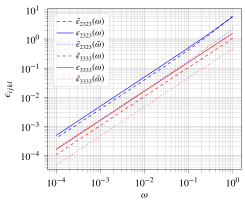
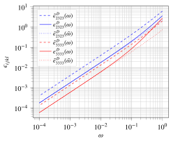
5 Particular cases of crack opening displacement tensor in an EO matrix
In this section some illustrations of the \(\uu{B}\) tensor of a crack in an EO matrix are proposed in the particular cases of a circular crack firstly parallel and secondly rotated with respect to a symmetry plane of the matrix. Then a more general case of crack shape and orientation is finally proposed.
5.1 Circular crack parallel to a symmetry plane of an EO matrix
The canonical frame \((\ve{i})_{i=1,2,3}\) is chosen such that \(\uv{n}=\ve{3}\) and \(\uu{D}\) is diagonal in this frame so that
\[ \wideeq{\uu{D}=\sum_{i=1}^3 d_i\,\ve{i}\otimes\ve{i} \quad\textrm{;}\quad \uu{\Theta}= \sum_{i=1}^3\sqrt{d_i}\,\ve{i}\otimes\ve{i} \quad\textrm{;}\quad \uu{\Phi}= \sum_{i=1}^3\frac{1}{\sqrt{d_i}}\,\ve{i}\otimes\ve{i} \quad\textrm{with}\quad d_1\,d_2\,d_3=1} \tag{78}\]
As the crack is circular there is actually no constraint about the choice of directions between \(\uv{\ell}\) and \(\uv{m}\) in the plane spanned by \(\{\ve{1},\ve{2}\}\). Without any loss of generality \(\ve{1}\) and \(\ve{2}\) are chosen so that \(d_2\geq d_1\) and \(\uv{\ell}\) and \(\uv{m}\) such that \(\uv{\ell}=\ve{1}\) and \(\uv{m}=\ve{2}\).
The derivation of the algorithm developed in Section 4 provides \(\tilde{a}\) and \(\tilde{b}\) from Eq. 42 and \(\tilde{\eta}\) from Eq. 47
\[ \wideeq{\tilde{a}=\frac{1}{\sqrt{d_1}} \quad\textrm{;}\quad \tilde{b}=\frac{\eta}{\sqrt{d_2}}=\frac{1}{\sqrt{d_2}} \quad\Rightarrow\quad \tilde{\eta}=\frac{\tilde{b}}{\tilde{a}} =\eta\,\sqrt{\frac{d_1}{d_2}} =\sqrt{\frac{d_1}{d_2}} =\left(\frac{E_1}{E_2}\right)^{\frac{1}{4}}} \tag{79}\]
The choice made to define the canonical frame in association to the condition \(d_2\geq d_1\) allows to keep the same convention for the initial crack and the transformed one (\(\uv{\tilde{\ell}}=\uv{\ell}\), \(\uv{\tilde{m}}=\uv{m}\) and \(\uv{\tilde{n}}=\uv{n}\)) and ensures that \(\tilde{\eta}\leq 1\). The aspect ratio \(\tilde{\eta}\) of the transformed crack decreases as the in-plane anisotropy \(d_2/d_1\) increases, the large axis being oriented along the most compliant direction and the small one along the stiffest direction.
As the directions \(\uv{\tilde{\ell}}\), \(\uv{\tilde{m}}\) and \(\uv{\tilde{n}}\) as well as the aspect ratio \(\tilde{\eta}\) of the transformed crack are known, the crack opening displacement tensor \(\uu{\tilde{B}}(\tilde{\eta})\) of an elliptical crack in an isotropic matrix of Young modulus \(E\) and Poisson ratio \(\nu\) is fully determined in Section 11 by the components \(\tilde{B}_{33}=\tilde{B}_{nn}\), \(\tilde{B}_{22}=\tilde{B}_{mm}\) and \(\tilde{B}_{11}=\tilde{B}_{\ell\ell}\), in Eq. 167, Eq. 168 and Eq. 169.
The parameter \(\tilde{\gamma}\) defined in Eq. 44 is also readily obtained here as well as the correction factor \(\tilde{a}\tilde{\gamma}\) in Eq. 54
\[ \wideeq{\tilde{\gamma}=\uv{\tilde{n}}\cdot\uu{\Phi}\cdot\n =\ve{3}\cdot\uu{\Phi}\cdot\ve{3} =\frac{1}{\sqrt{d_3}} \quad\textrm{;}\quad \tilde{a}\,\tilde{\gamma}=\frac{1}{\sqrt{d_1\,d_3}}=\sqrt{d_2}} \tag{80}\]
It is now clear from Eq. 54 and Eq. 78 that the crack opening displacement tensor \(\uu{B}\) of a circular crack aligned in a symmetry plane of an EO matrix is diagonalized in the canonical frame and its components are
\[ \wideeq{B_{33}=B_{nn} = \frac{\tilde{a}\,\tilde{\gamma}}{d_3}\,\tilde{B}_{nn}(\tilde{\eta}) = \frac{8\,(1-\nu^2)}{3\,E}\, \frac{\sqrt{d_1}}{d_3}\, \frac{1}{\mathcal{\tilde{E}}}} \tag{81}\]
\[ \wideeq{B_{22}=B_{mm} = \frac{\tilde{a}\,\tilde{\gamma}}{d_2}\,\tilde{B}_{mm}(\tilde{\eta}) = \frac{8\,(1-\nu^2)}{3\,E}\, \frac{\sqrt{d_1}}{d_2}\, \frac{d_2-d_1}{\left(d_2-(1-\nu)\,d_1\right) \,\mathcal{\tilde{E}}-\nu\,d_1\,\mathcal{\tilde{K}}}} \tag{82}\]
\[ \wideeq{B_{11}=B_{\ell\ell} = \frac{\tilde{a}\,\tilde{\gamma}}{d_1}\,\tilde{B}_{\ell\ell}(\tilde{\eta}) = \frac{8\,(1-\nu^2)}{3\,E}\, \frac{1}{\sqrt{d_1}}\, \frac{d_2-d_1} {\left((1-\nu)\,d_2-d_1\right)\,\mathcal{\tilde{E}}+ \nu\,d_1\,\mathcal{\tilde{K}}}} \tag{83}\]
where \(\mathcal{\tilde{K}}= \mathcal{K}(\sqrt{1-\tilde{\eta}^2})= \mathcal{K}(\sqrt{1-\sqrt{\frac{E_1}{E_2}}})\) and \(\mathcal{\tilde{E}}= \mathcal{E}(\sqrt{1-\tilde{\eta}^2})= \mathcal{E}(\sqrt{1-\sqrt{\frac{E_1}{E_2}}})\) are the complete elliptic of respectively the first and second kind (see [57]) applied on the transformed ellipse. Note that if \(d_2=d_1\), the transformed crack is also circular (\(\tilde{\eta}=1\) in Eq. 79) so that the components \(\tilde{B}_{ii}(\tilde{\eta})\) in Eq. 81, Eq. 82 and Eq. 83 shall be replaced by the limits Eq. 170.
It is proposed to examine hereafter the effect of in-plane anisotropy of the matrix on \(\uu{B}\). To this end {\(d_3=1\)} is chosen so that \(E_3=E\) Eq. 11 and the in-plane anisotropy is controlled by the parameter \(\delta=\frac{E_2}{E_1}=\left(\frac{d_2}{d_1}\right)^2\geq 1\) (implying that \(d_2=1/d_1=\delta^{\nicefrac{1}{4}}\) since \(d_1 d_2=1/d_3=1\)). The evolution of the components \(B_{ii}\) (normalized by \(1/E\)) with respect to the anisotropy measure \(\delta\) are presented in Fig. 4 for various values of the Poisson ratio \(\nu\).
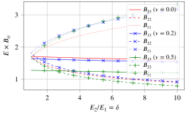
The initial values at \(\delta=1\) correspond to the case of an isotropic matrix and are given in Eq. 170. As already known from [53], all the components are equal if \(\nu=0\) and \(\delta=1\) and the discrepancy between \(B_{33}\) and the other ones increases with \(\nu\). When the anisotropy parameter \(\delta\) increases, the normal compliance \(B_{33}\) slightly decreases so the anisotropy tends to stiffen the crack as regards the opening mode whereas \(E_3\) remains constant. As expected the compliance in shear mode in the direction of higher stiffness (i.e. \(B_{22}\)) is also reduced with increasing \(\delta\). On the contrary the compliance in shear mode \(B_{11}\) increases.
5.2 Circular crack rotated with respect to a symmetry plane of an EO matrix
In this example, the canonical frame \((\ve{i})_{i=1,2,3}\) is still defined by the principal axes of \(\uu{D}\) (\(\uv{e}^D_i=\ve{i}\)). The crack shape is circular and the crack normal \(\uv{n}\) is obtained from \(\ve{3}\) by rotation of angle \(\theta\) around \(\ve{2}\) so that
\[ \wideeq{\left\{ \begin{array}{rcl} \uv{\ell}&=&\cos{\theta}\,\ve{1}-\sin{\theta}\,\ve{3}\\ \uv{m}&=&\ve{2}\\ \uv{n}&=&\sin{\theta}\,\ve{1}+\cos{\theta}\,\ve{3} \end{array} \right. \quad\Leftrightarrow\quad \left\{ \begin{array}{rcl} \ve{1}&=&\cos{\theta}\,\uv{\ell}+\sin{\theta}\,\uv{n}\\ \ve{2}&=&\uv{m}\\ \ve{3}&=&-\sin{\theta}\,\uv{\ell}+\cos{\theta}\,\uv{n} \end{array} \right. \quad\textrm{and}\quad \uu{\Phi}=\sum_{i=1}^3\frac{1}{\sqrt{d_i}}\,\ve{i}\otimes\ve{i}} \tag{84}\]
As the crack is circular the tensor \(\uu{A}\) for \(\omega=0\) can be written \(\lim_{\omega\to 0}\uu{A}=\uv{\ell}\otimes\uv{\ell}+\uv{m}\otimes\uv{m}\) and Eq. 42 defining the transformed crack becomes here
\[ \wideeq{\lim_{\omega\to 0}\trans{\uu{\tilde{A}}}\cdot\uu{\tilde{A}} = \frac{1}{d_2}\,\uv{e}_{2}\otimes\uv{e}_{2} +\frac{\cos^2{\theta}}{d_1}\,\uv{e}_{1}\otimes\uv{e}_{1} +\frac{\sin^2{\theta}}{d_3}\,\uv{e}_{3}\otimes\uv{e}_{3} -\frac{\sin{(2\theta)}}{2\,\sqrt{d_1\,d_3}}\, \left(\uv{e}_{1}\otimes\uv{e}_{3}+\uv{e}_{3}\otimes\uv{e}_{1}\right)} \tag{85}\]
The eigenvector of Eq. 85 associated to the eigenvalue \(0\) is also the normal of the transformed crack and is given by
\[ \wideeq{\uv{\tilde{n}} =\tilde{\gamma}\,\left(\sqrt{d_1}\,\sin{\theta}\,\uv{e}_1 +\sqrt{d_3}\,\cos{\theta}\,\uv{e}_3\right) \quad\textrm{with}\quad \tilde{\gamma}=\frac{1}{\sqrt{d_3\,\cos^2{\theta}+d_1\,\sin^2{\theta}}}} \tag{86}\]
where the definition of \(\tilde{\gamma}\) is consistent with Eq. 51 since the relationship \(\uu{\Phi}\cdot\uv{\tilde{n}} =\tilde{\gamma}\,\uv{n}\) is clearly satisfied. The two non-zero eigenvalues of Eq. 85 are \(\frac{1}{d_2}=d_1d_3\) and \(\frac{1}{\tilde{\gamma}^2d_1d_3}\) so that two cases can occur depending on the order between these eigenvalues. In both cases, the axes \(\uv{\tilde{\ell}}\), \(\uv{\tilde{m}}\) as well as the aspect ratio \(\tilde{\eta}\) of the transformed crack are given herebelow. The crack opening displacement tensor \(\uu{\tilde{B}}(\tilde{\eta})\) of the transformed elliptical crack in the isotropic matrix of Young modulus \(E\) and Poisson ratio \(\nu\) is fully determined in Section 11 and writes as in Eq. 57. The \(\uu{B}\) tensor of the initial problem is eventually calculated from Eq. 58 and the non-zero components are detailed herebelow.
if \(\tilde{\gamma}\geq \frac{1}{d_1\,d_3}\)
\[ \wideeq{\tilde{a}=\sqrt{d_1\,d_3} \quad\textrm{;}\quad \tilde{b}= \frac{1}{\tilde{\gamma}\,\sqrt{d_1\,d_3}} \quad\textrm{;}\quad \tilde{\eta}= \frac{1}{\tilde{\gamma}\,d_1\,d_3} \quad\textrm{;}\quad \uv{\tilde{\ell}}=\uv{e}_2 \quad\textrm{;}\quad \uv{\tilde{m}}=\tilde{\gamma}\,\left(\sqrt{d_3}\,\cos{\theta}\,\uv{e}_1 -\sqrt{d_1}\,\sin{\theta}\,\uv{e}_3\right)} \tag{87}\]
\[ \wideeq{\begin{aligned} \uu{B}&=& \tilde{\gamma}\,\sqrt{d_1\,d_3}\, \Bigg( \tilde{\gamma}^2\,\tilde{B}_{nn}\,\uv{n}\otimes\uv{n} + \tilde{B}_{\ell\ell}\,d_1\,d_3\, \uv{m}\otimes\uv{m} +\\ && \frac{1}{\tilde{\gamma}^2\,d_1\,d_3}\, \tilde{B}_{mm}\, \Big[ \uv{\ell} +\frac{\tilde{\gamma}^2\,(d_3-d_1)}{2}\, \sin{(2\theta)}\,\uv{n} \Big] \otimes \Big[ \uv{\ell} +\frac{\tilde{\gamma}^2\,(d_3-d_1)}{2}\, \sin{(2\theta)}\,\uv{n} \Big] \Bigg) \end{aligned}} \tag{88}\]
of non-zero components in the crack frame
\[ \wideeq{B_{nn} = \frac{\tilde{\gamma}^3}{\sqrt{d_1\,d_3}}\, \left( d_1\,d_3\, \tilde{B}_{nn} + \frac{(d_3-d_1)^2}{4}\, \sin^2{(2\theta)}\,\tilde{B}_{mm} \right)} \tag{89}\]
\[ \wideeq{B_{mm} = \tilde{\gamma}\,(d_1\,d_3)^{\nicefrac{3}{2}}\, \tilde{B}_{\ell\ell}} \tag{90}\]
\[ \wideeq{B_{\ell\ell} = \frac{1}{\tilde{\gamma}\,\sqrt{d_1\,d_3}}\, \tilde{B}_{mm}} \tag{91}\]
\[ \wideeq{B_{n\ell}=B_{\ell n} = \frac{\tilde{\gamma}\,(d_3-d_1)}{2\,\sqrt{d_1\,d_3}}\, \sin{(2\theta)}\, \tilde{B}_{mm}} \tag{92}\]
and in the matrix frame
\[ \wideeq{B_{11} = \tilde{\gamma}\,\sqrt{d_1\,d_3}\, \Bigg( \tilde{\gamma}^2\,\tilde{B}_{nn}\,\sin^2{\theta} +\frac{\tilde{B}_{mm}}{\tilde{\gamma}^2\,d_1\,d_3}\, \cos^2{\theta}\, \left(1+\tilde{\gamma}^2\,(d_3-d_1)\,\sin^2{\theta}\right)^2 \Bigg)} \tag{93}\]
\[ \wideeq{B_{22} = \tilde{\gamma}\,(d_1\,d_3)^{\nicefrac{3}{2}}\, \tilde{B}_{\ell\ell}} \tag{94}\]
\[ \wideeq{B_{33} = \tilde{\gamma}\,\sqrt{d_1\,d_3}\, \Bigg( \tilde{\gamma}^2\,\tilde{B}_{nn}\,\cos^2{\theta} +\frac{\tilde{B}_{mm}}{\tilde{\gamma}^2\,d_1\,d_3}\, \sin^2{\theta}\, \left(1-\tilde{\gamma}^2\,(d_3-d_1)\,\cos^2{\theta}\right)^2 \Bigg)} \tag{95}\]
\[ \wideeq{\begin{aligned} B_{31}=B_{13}&= \frac{\tilde{\gamma}\,\sqrt{d_1\,d_3}\,\sin{(2\theta)}}{2}\, \Bigg( \tilde{\gamma}^2\,\tilde{B}_{nn}\\ & -\frac{\tilde{B}_{mm}}{\tilde{\gamma}^2\,d_1\,d_3}\, \left(1-\tilde{\gamma}^2\,(d_3-d_1)\,\cos{(2\theta)} -\frac{\tilde{\gamma}^4\,(d_3-d_1)^2}{4}\,\sin^2{(2\theta)}\right) \Bigg) \end{aligned}} \tag{96}\]
if \(\tilde{\gamma}< \frac{1}{d_1\,d_3}\)
\[ \wideeq{\tilde{a}= \frac{1}{\tilde{\gamma}\,\sqrt{d_1\,d_3}} \quad\textrm{;}\quad \tilde{b}=\sqrt{d_1\,d_3} \quad\textrm{;}\quad \tilde{\eta}= \tilde{\gamma}\,d_1\,d_3 \quad\textrm{;}\quad \uv{\tilde{\ell}}=\tilde{\gamma}\,\left(\sqrt{d_3}\,\cos{\theta}\,\uv{e}_1 -\sqrt{d_1}\,\sin{\theta}\,\uv{e}_3\right) \quad\textrm{;}\quad \uv{\tilde{m}}=\uv{e}_2} \tag{97}\]
\[ \wideeq{\begin{aligned} \uu{B}&=& \frac{1}{\sqrt{d_1\,d_3}}\, \Bigg( \tilde{\gamma}^2\,\tilde{B}_{nn}\,\uv{n}\otimes\uv{n} + \tilde{B}_{mm}\,d_1\,d_3\, \uv{m}\otimes\uv{m} +\\ && \frac{1}{\tilde{\gamma}^2\,d_1\,d_3}\, \tilde{B}_{\ell\ell}\, \Big[ \uv{\ell} +\frac{\tilde{\gamma}^2\,(d_3-d_1)}{2}\, \sin{(2\theta)}\,\uv{n} \Big] \otimes \Big[ \uv{\ell} +\frac{\tilde{\gamma}^2\,(d_3-d_1)}{2}\, \sin{(2\theta)}\,\uv{n} \Big] \Bigg) \end{aligned}} \tag{98}\]
of non-zero components in the crack frame
\[ \wideeq{B_{nn} = \frac{\tilde{\gamma}^2}{(d_1\,d_3)^{\nicefrac{3}{2}}}\, \left( d_1\,d_3\, \tilde{B}_{nn} + \frac{(d_3-d_1)^2}{4}\, \sin^2{(2\theta)}\,\tilde{B}_{\ell\ell} \right)} \tag{99}\]
\[ \wideeq{B_{mm} = \sqrt{d_1\,d_3}\, \tilde{B}_{mm}} \tag{100}\]
\[ \wideeq{B_{\ell\ell} = \frac{1}{\tilde{\gamma}^2\,(d_1\,d_3)^{\nicefrac{3}{2}}}\, \tilde{B}_{\ell\ell}} \tag{101}\]
\[ \wideeq{B_{n\ell}=B_{\ell n} = \frac{d_3-d_1}{2\,(d_1\,d_3)^{\nicefrac{3}{2}}}\, \sin{(2\theta)}\, \tilde{B}_{\ell\ell}} \tag{102}\]
and in the matrix frame
\[ \wideeq{B_{11} = \frac{1}{\sqrt{d_1\,d_3}}\, \Bigg( \tilde{\gamma}^2\,\tilde{B}_{nn}\,\sin^2{\theta} +\frac{\tilde{B}_{mm}}{\tilde{\gamma}^2\,d_1\,d_3}\, \cos^2{\theta}\, \left(1+\tilde{\gamma}^2\,(d_3-d_1)\,\sin^2{\theta}\right)^2 \Bigg)} \tag{103}\]
\[ \wideeq{B_{22} = \sqrt{d_1\,d_3}\, \tilde{B}_{mm}} \tag{104}\]
\[ \wideeq{B_{33} = \frac{1}{\sqrt{d_1\,d_3}}\, \Bigg( \tilde{\gamma}^2\,\tilde{B}_{nn}\,\cos^2{\theta} +\frac{\tilde{B}_{mm}}{\tilde{\gamma}^2\,d_1\,d_3}\, \sin^2{\theta}\, \left(1-\tilde{\gamma}^2\,(d_3-d_1)\,\cos^2{\theta}\right)^2 \Bigg)} \tag{105}\]
\[ \wideeq{\begin{aligned} B_{31}=B_{13}&= \frac{\sin{(2\theta)}}{2\,\sqrt{d_1\,d_3}}\, \Bigg( \tilde{\gamma}^2\,\tilde{B}_{nn}\\ & -\frac{\tilde{B}_{mm}}{\tilde{\gamma}^2\,d_1\,d_3}\, \left(1-\tilde{\gamma}^2\,(d_3-d_1)\,\cos{(2\theta)} -\frac{\tilde{\gamma}^4\,(d_3-d_1)^2}{4}\,\sin^2{(2\theta)}\right) \Bigg) \end{aligned}} \tag{106}\]
The rotation of the crack relatively to the matrix axes clearly implies that \(\uu{B}\) is not diagonalized anymore neither in the crack frame nor in the matrix frame when \(\theta\) is different from \(0\) or \(\pi/2\), inducing couplings between normal and shear modes. Some numerical examples illustrating non negligible couplings for different cases of matrix anisotropy are presented in Fig. 5.
All the components of \(\uu{B}\) in the crack frame, including the off-diagonal one, strongly depend on the crack orientation, which was rather expected from the anisotropy of the matrix. The components of \(\uu{B}\) in the matrix frame also depend on the crack orientation but with a much narrower amplitude despite the choice of large anisotropy parameters (the ratio between extreme directional moduli is \(16\) here). In addition it is worth putting in evidence that the off-diagonal component in the matrix frame \(B_{31}\) remains very small by comparison to the diagonal ones, which means that the principal axes of \(\uu{B}\) are almost aligned with those of the matrix. The principal axes of \(\uu{B}\) can be represented by orthonormal unit vectors \(\uv{\ell}_B\), \(\uv{m}\) and \(\uv{n}_B\) of same expressions as their counterparts defining the crack in Eq. 84 with \(\theta\) formally replaced by the angle \(\theta_B\). The evolution of the latter angle with the crack rotation \(\theta\), represented in Fig. 6, shows that \(\theta_B\) remains very close to \(0\) (always lower than about \(\pi/32\) with the chosen anisotropy parameters), which confirms that \(\uu{B}\) is almost diagonalized in the matrix frame. All this explains why a constant \(\uu{B}\) tensor, diagonal in the matrix frame, has already been considered as a rough approximation for any crack orientation ([26], [24]), although this result is not rigorously exact since relatively significant errors can occur (see \(B_{33}\) in Fig. 5 (b)). The hereabove comments concern the present case of rotation of a circular crack around one of the matrix axes. The next section aims at proposing a more general case of crack orientation in order to check the extent of validity of these comments.
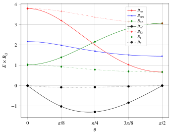
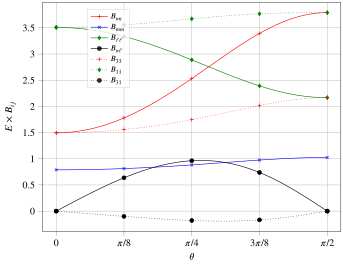
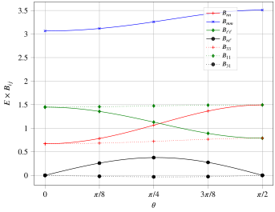
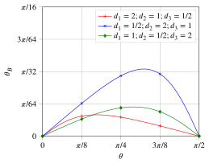
5.3 Elliptical crack arbitrarily oriented relatively to the matrix axes
This section presents an implementation of the calculation of the components of \(\uu{B}\) tensor in the crack frame and in the matrix frame in general cases of crack orientation. An EO matrix with 3 different directional moduli is considered in which a circular or elliptical crack is embedded with evolving orientation such that the crack and matrix axes do not particularly share common directions. The strategy consists in choosing the principal axes of the matrix as canonical frame and setting the crack inclination \(\theta\) and the angle \(\psi\) (if the crack is not circular) in Eq. 19–Eq. 21 different from \(0\) and \(\pi/2\) (see angle representation in Fig. 1 (b)) while allowing the angle \(\phi\) to evolve between \(0\) and \(\pi/2\).
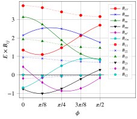
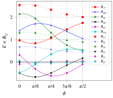
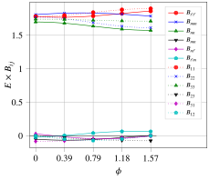
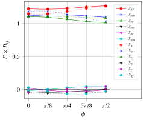
Fig. 7 (a) and Fig. 7 (b) respectively related to a circular and elliptical crack embedded in an EO matrix of large anisotropy confirm the observations of Section 5.2. Firstly the diagonal components of \(\uu{B}\) in the matrix frame have a much lower amplitude of variation with the rotation angle \(\phi\) than the components in the crack frame. Secondly the off-diagonal components of \(\uu{B}\) in the matrix frame remain very small so that \(\uu{B}\) can be roughly considered as diagonal in this frame whereas it is far from being the case in the crack axes, which is at the origin of normal-shear couplings. The approximation of \(\uu{B}\) by a constant tensor (independent from the crack orientation) can be made but at the cost of relatively significant error since the variations with respect to \(\phi\) of the diagonal components of \(\uu{B}\) in the fixed crack frame are not fully negligible.
Fig. 7 (c) and Fig. 7 (d) present the components of \(\uu{B}\) in the case of small anisotropy (\(d_i\) are close to \(1\)). The diagonal components in the matrix and crack frames show the same orders of magnitude and the same amplitudes of variation. Besides the off-diagonal components are all very small. It follows that approximating \(\uu{B}\) by a constant here finally amounts to neglect the effect of anisotropy and consider the expression of \(\uu{B}\) in an isotropic matrix in which \(\uu{B}\) can be roughly taken as an homothety if \(1-\nu/2\) remains close to \(1\) and the crack is circular (see [53] and [7] and the expressions Eq. 170). In the general case, approximating \(\uu{B}\) by a constant tensor may be a too rough assumption.
6 Effective elasticity of a cracked EO medium
Once in possession of a practical way to calculate the crack opening displacement tensor for an arbitrarily oriented crack embedded in an EO matrix as derived in Section 4.1 (see Eq. 54) and subsequently the corresponding compliance tensor from Eq. 32, it is straightforward to apply the classical homogenization schemes allowing to estimate the effective elasticity of a representative volume element of cracked medium. The derivation of schemes is not detailed here (one can refer to [51] and [41]) but only the results are applied to the case of a set of elliptical open crack families, each of them being defined by an orientation and an in-plane shape.
The non-interaction approximation (NIA), which coincides in the case of cracks with the Mori-Tanaka-Benveniste scheme [58], allows to write the macroscopic compliance of the crack medium as the sum of the matrix compliance \(\uuuu{S}\) and compliance contributions of the crack families indexed by \(i\)
\[ \wideeq{\uuuu{S}^\mathrm{NIA}= \uuuu{S}+\sum_{i}\frac{4}{3}\,\pi\,\epsilon_i\,\eta_i\,\uuuu{H}_i} \tag{107}\]
where \(\epsilon_i\) and \(\eta_i\) are the crack density and the in-plane aspect ratio of the \(i^\mathrm{th}\) family. The density is defined as (see [2], [59], [4])
\[ \wideeq{\epsilon_i=\mathcal{N}_i\,a_i^3} \tag{108}\]
where \(\mathcal{N}_i\) denotes the number of cracks per volume unit and \(a_i\) is the largest radius.
The Ponte-Castañeda Willis (PCW)) scheme [60] is also usually implemented in the case of a matrix containing heterogeneities such that the shapes of the latter and their spatial distribution are uncoupled. The most popular version of this scheme, which has been used for cracked media, consists in adopting one single ellipsoidal spatial distribution and several shapes and orientations of the heterogeneities. Another interesting scheme adapted to the case of a cracked material is the Maxwell one relying on an equivalence between the remote influence of the sum of heterogeneities located in an ellipsoidal domain and an effective particle of the same ellipsoidal shape and sought property [61]. Interestingly [62] recalls that Maxwell and PCW schemes coincide if the latter is defined with one single ellipsoidal spatial distribution which is precisely the counterpart of the shape of the effective particle in Maxwell scheme. In this case, the expression of the effective compliance writes
\[ \wideeq{\uuuu{S}^\mathrm{MAX}=\uuuu{S}^\mathrm{PCW}= \uuuu{S}+\left(\left(\sum_{i}\frac{4}{3}\,\pi\, \epsilon_i\,\eta_i\,\uuuu{H}_i\right)^{-1}-\uuuu{Q}\right)^{-1}} \tag{109}\]
where \(\uuuu{Q}\) is the second Hill tensor related to the ellipsoid describing the spatial distribution in the PCW scheme or the effective particle in the Maxwell scheme. This tensor corresponding to an ellipsoid embedded in an EO matrix can be practically calculated thanks to a transformation from an isotropic matrix as in Eq. 25 (see also [33] and [19]).
If the cracks are all circular (\(\eta_i=1\)) and \(\epsilon(\theta,\phi)\) denotes the density of cracks of unit normal oriented in the infinitesimal solid angle around \(\n(\theta,\phi)\) given in Eq. 21, the sum of crack contributions in Eq. 107 and Eq. 109 turns into a continuous expression
\[ \wideeq{\sum_{i}\frac{4}{3}\,\pi\,\epsilon_i\,\eta_i\,\uuuu{H}_i \to \int_{\theta=0}^{\pi}\int_{\phi=0}^{2\,\pi} \frac{4}{3}\,\pi\,\epsilon(\theta,\phi)\, \uuuu{H}(\theta,\phi)\, \frac{\sin{\theta}\,\ud\phi\,\ud\theta}{4\,\pi}} \tag{110}\]
where \(\uuuu{H}(\theta,\phi)\) is the crack compliance contribution tensor corresponding to the normal \(\n(\theta,\phi)\) built from Eq. 32 and Eq. 54). In absence of analytical integration, this continuous formulation can be estimated thanks to Lebedev quadrature [63] involving tabulated points \((\theta_j,\phi_j)\) and weights \(w_j\) providing exact integration for a given maximal polynomial degree
\[ \wideeq{\int_{\theta=0}^{\pi}\int_{\phi=0}^{2\,\pi} \frac{4}{3}\,\pi\,\epsilon(\theta,\phi)\, \uuuu{H}(\theta,\phi)\, \frac{\sin{\theta}\,\ud\phi\,\ud\theta}{4\,\pi} \approx \frac{4}{3}\,\pi\,\sum_{j=1}^N w_j\,\epsilon(\theta_j,\phi_j)\, \uuuu{H}(\theta_j,\phi_j)} \tag{111}\]
In the following example a rule corresponding to \(N=146\) points is chosen, which corresponds to a precision \(19\) in terms of polynomial degree. The case of an isotropically distributed orientation is considered so that the density is uniform and equal to the overall crack density \(\epsilon(\theta,\phi)=\epsilon\). In addition, the spherical shape is adopted for the spatial distribution of the PCW scheme so that the crack density should theoretically be bounded by \(\frac{3}{4\pi}\) in consistency with the notion of security sphere put in evidence in [60]. Fig. 8 represents, for different matrix anisotropy, the evolution with the crack density of the normalized distance of each homogenized stiffness \(\uuuu{C}^\mathrm{hom}\) (NIA or PCW) to the closest isotropic tensor \(\uuuu{C}^\mathrm{iso}\) defined as [64]
\[ \wideeq{d(\uuuu{C}^\mathrm{hom},\mathrm{ISO})= \frac{||\uuuu{C}^\mathrm{hom}-\uuuu{C}^\mathrm{iso}||}{||\uuuu{C}^\mathrm{hom}||} \quad\textrm{with}\quad \uuuu{C}^\mathrm{iso}=\frac{C^\mathrm{hom}_{iijj}}{3}\,\uuuu{J}+ \frac{1}{5}\,\left(C^\mathrm{hom}_{ijij}-\frac{C^\mathrm{hom}_{iijj}}{3}\right)\,\uuuu{K}} \tag{112}\]
where \(\uuuu{J}\) and \(\uuuu{K}\) are the classical fourth-order projectors of isotropy.
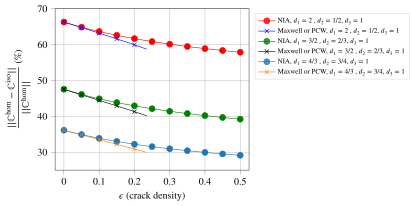
It is noticeable in Fig. 8 that the presence of randomly oriented cracks in the EO matrix gradually attenuates the level of anisotropy as crack density increases. This result is the 3D counterpart of an observation already made in the 2D framework in [55].
7 Adaptation to a crack seen as a long cylinder of flat elliptical section or 2D crack
7.1 Cylindrical crack
This section revisits the main results of the paper in the case of a cylindrical crack, i.e. such that the domain defined by Eq. 26 is transformed in
\[ \wideeq{\x\in\mathcal{I}_{\uu{A}} \quad\Leftrightarrow\quad \x\cdot\n=0 \quad\textrm{and}\quad |\x\cdot\uv{m}|\leq b} \tag{113}\]
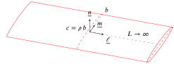
This domain is obviously invariant by translation along \(\uv{\ell}\) and asymptotically corresponds to the definition of the ellipsoid Eq. 17 with \(\uu{A}\) given by Eq. 18 such that \(c\) tends towards \(0\) and \(a\) tends towards infinity. In addition to the two aspect ratios \(\eta\) and \(\omega\), a third one \(\rho\) is conveniently introduced here
\[ \wideeq{\eta=\frac{b}{a} \quad\textrm{;}\quad \omega=\frac{c}{a} \quad\textrm{;}\quad \rho=\frac{c}{b}=\frac{\omega}{\eta}} \tag{114}\]
Whereas these three aspect ratios are supposed to tend towards \(0\) in this geometrical representation, the most relevant one controlling the flattening of a cylinder of elliptical section towards the domain Eq. 113 is obviously \(\rho\) since \(b\) is the only remaining radius of finite length. As detailed in [50], \(\rho\) plays here the same role as \(\omega\) in a crack model of finite elliptical shape.
Although the cylindrical crack defined by Eq. 113 is geometrically obtained as a limit of an ellipsoid, it must be noticed that some important calculations of Section 3, Section 4 and Section 11 need to be handled with care when taking the limit \(a\to\infty\) or \(\eta\to 0\). In fact the right geometrical point of view preparing to the notion of 2D crack is that of a cylindrical crack as presented in Fig. 9 in which the direction of the large axis \(\uv{\ell}\) becomes the axis of the cylinder of half-length \(L\) somehow replacing \(a\) and tending towards infinity. With this model, the volume Eq. 28 and the surface Eq. 29 now become
\[ \wideeq{V=2\,L\,\pi\,b^2\,\rho \quad\textrm{;}\quad S=4\,L\,b} \tag{115}\]
Moreover, in order to build the counterpart of Eq. 30 and eventually Eq. 32 in the case of a cylindrical crack, the fraction \(\frac{a\omega S}{V}\) must be changed in \(\frac{b\rho S}{V}\), which boils down to \(\frac{c S}{V}\) while implying that \(\frac{3}{4}\) in Eq. 30 is changed in \(\frac{2}{\pi}\). Indeed the relevant compliance contribution tensor is now obtained from the limit \(\lim_{\rho\to 0}\rho\uuuu{Q}^{-1}\) [50] and the relevant length for the normalization of the crack opening displacement is now \(b\) instead of \(a\). Since the relationship Eq. 31 remains valid, the counterpart of Eq. 32 is
\[ \wideeq{\lim_{\rho\to 0} \rho\,\uuuu{Q}^{-1} =\frac{2}{\pi}\,\n\sotimes\uu{B}^{\textrm{cyl}}\sotimes\n} \tag{116}\]
where the notation \(\uu{B}^{\textrm{cyl}}\) is used to avoid the confusion with its elliptical counterpart. In the present approach where the second-order crack opening displacement tensor is identified from the fourth-order compliance contribution tensor by Eq. 32 for an elliptical crack and Eq. 116 for a cylindrical one and keeping in mind that the aspect ratios are related by \(\rho=\frac{\omega}{\eta}\) in Eq. 114, it follows that the consistency between both definitions entails
\[ \wideeq{\frac{2}{\pi}\,\uu{B}^{\textrm{cyl}} =\frac{3}{4}\,\lim_{\eta\to 0}\frac{\uu{B}}{\eta} \quad\Rightarrow\quad \uu{B}^{\textrm{cyl}} =\frac{3\,\pi}{8}\,\lim_{\eta\to 0}\frac{\uu{B}}{\eta}} \tag{117}\]
The immediate consequence is the possibility to identify the \(\uu{B}\) tensor of a cylindrical crack in an isotropic matrix from that of an elliptical crack (see Section 11 and more particulary Eq. 171).
Beyond this identification of \(\uu{B}^{\textrm{cyl}}\) from the elliptical shape and the determination of its expression when the matrix is isotropic, it is now necessary to examine the case of an EO matrix and revisit the reasoning leading to Eq. 54 in order to adapt it to the present specific shape, in other words the relationship between the sought \(\uu{B}^{\textrm{cyl}}\) and that of the transformed isotropic problem. Coming back to the notion of asymptotic ellipsoidal shape defined by \(\uu{A}\) in Eq. 18, it is clear that the direction of the cylinder axis is provided by taking the limit
\[ \wideeq{\lim_{a\to\infty} \frac{\trans{\uu{A}}\cdot\uu{A}}{a^2}=\uv{\ell}\otimes\uv{\ell}} \tag{118}\]
Indeed the fact that \(\trans{\uu{A}}\cdot\uu{A}\) asymptotically behaves as a tensor of rank 1 is the consequence of the cylindrical shape of axis determined by the only eigenvector associated to a non-zero eigenvalue. Recalling that the transformed crack is obtained from \(\uu{\tilde{A}}=\uu{A}\cdot\uu{\Phi}\), it follows that the latter crack is also of cylindrical type of axis determined by the eigenvector of the tensor
\[ \wideeq{\lim_{a\to\infty} \frac{\trans{\uu{\tilde{A}}}\cdot\uu{\tilde{A}}}{a^2} =(\uu{\Phi}\cdot\uv{\ell})\otimes (\uu{\Phi}\cdot\uv{\ell})} \tag{119}\]
In other words, \(\uv{\tilde{\ell}}\) is the unit vector colinear to \(\uu{\Phi}\cdot\uv{\ell}\) such that
\[ \wideeq{\uu{\Phi}\cdot\uv{\ell}=\tilde{\alpha}\, \uv{\tilde{\ell}} \quad\textrm{with}\quad \tilde{\alpha}=\norm{\uu{\Phi}\cdot\uv{\ell}}} \tag{120}\]
A Taylor expansion of \(\trans{\uu{\tilde{A}}}\cdot\uu{\tilde{A}}\) to an upper order gives
\[ \wideeq{\trans{\uu{\tilde{A}}}\cdot\uu{\tilde{A}} = a^2\,\tilde{\alpha}^2\, \uv{\tilde{\ell}} \otimes\uv{\tilde{\ell}} + b^2\, (\uu{\Phi}\cdot\uv{m}) \otimes(\uu{\Phi}\cdot\uv{m}) +\grando{\rho^2}} \tag{121}\]
The consequence is that the direction \(\uv{\tilde{m}}\) corresponding to the transverse extension and the normal \(\uv{\tilde{n}}\) of the transformed cylindrical crack are obtained by Gram-Schmidt process successively leading to
\[ \wideeq{\uu{\Phi}\cdot\uv{m}=\tilde{\beta}\, \uv{\tilde{m}}+ \tilde{v}_{\ell}\,\uv{\tilde{\ell}} \quad\textrm{with}\quad \tilde{v}_{\ell}=\uv{\tilde{\ell}}\cdot \uu{\Phi}\cdot\uv{m} \quad\textrm{,}\quad \tilde{\beta}= \norm{\uu{\Phi}\cdot\uv{m} -\tilde{v}_{\ell}\,\uv{\tilde{\ell}}}} \tag{122}\]
and
\[ \wideeq{\uu{\Phi}\cdot\uv{n}= \tilde{\gamma}\,\uv{\tilde{n}}+ \tilde{w}_{m}\,\uv{\tilde{m}}+ \tilde{w}_{\ell}\,\uv{\tilde{\ell}} \quad\textrm{with}\quad \tilde{w}_{m}=\uv{\tilde{m}}\cdot \uu{\Phi}\cdot\uv{n} \;\textrm{,}\quad \tilde{w}_{\ell}=\uv{\tilde{\ell}}\cdot \uu{\Phi}\cdot\uv{n} \;\textrm{,}\quad \tilde{\gamma}= \norm{\uu{\Phi}\cdot\uv{n} -\tilde{w}_{m}\,\uv{\tilde{m}} -\tilde{w}_{\ell}\,\uv{\tilde{\ell}} }} \tag{123}\]
such that the counterpart of Eq. 45 is now
\[ \wideeq{\trans{\uu{\tilde{A}}}\cdot\uu{\tilde{A}}\underset{\rho\to 0}{\sim} a^2\,\tilde{\alpha}^2\,\uv{\tilde{\ell}}\otimes\uv{\tilde{\ell}}+ b^2\, \left(\tilde{\beta}^2\,\uv{\tilde{m}}\otimes\uv{\tilde{m}}+ \rho^2\,\tilde{\gamma}^2\,\uv{\tilde{n}}\otimes\uv{\tilde{n}} +\rho^2\,\uu{\Delta}\right) \quad\textrm{with}\quad \uv{\tilde{n}}\cdot\uu{\Delta}\cdot\uv{\tilde{n}}=0} \tag{124}\]
The equation of the transformed asymptotic ellipsoid Eq. 124 implies that the transformed aspect ratio of interest \(\tilde{\rho}\) is now given by
\[ \wideeq{\tilde{\rho}=\rho\,\frac{\tilde{\gamma}}{\tilde{\beta}}} \tag{125}\]
so that the counterpart of Eq. 48 becomes here
\[ \wideeq{\lim_{\rho\to 0} \rho\, \uuuu{Q}^{-1}= \frac{\tilde{\beta}}{\tilde{\gamma}} \, (\uu{\Phi}\sboxtimes\uu{\Phi}): \left[ \lim_{\tilde{\rho}\to 0} \tilde{\rho}\, \uuuu{\tilde{Q}}^{-1}\right] :(\uu{\Phi}\sboxtimes\uu{\Phi})} \tag{126}\]
where the term into brackets of the right hand side denotes the fourth-order crack compliance contribution tensor related to the transformed isotropic problem to which can be associated a crack opening displacement tensor \(\uu{\tilde{B}}^{\textrm{cyl}}\) thanks to Eq. 116 and practically calculated in Eq. 171. Observing in addition that the result Eq. 51 remains valid here since Eq. 120 and Eq. 122 contracted with \(\uv{\tilde{n}}\) and the symmetry of \(\uu{\Phi}\) prove that \(\uu{\Phi}\cdot\uv{\tilde{n}}\) is colinear to \(\uv{n}\), it follows that Eq. 53 and Eq. 54 are here adapted as
\[ \wideeq{\lim_{\rho\to 0} \rho\, \uuuu{Q}^{-1}= \frac{2}{\pi} \,\tilde{\beta}\,\tilde{\gamma}\; \n\sotimes \left(\uu{\Phi}\cdot \uu{\tilde{B}}^{\textrm{cyl}} \cdot\uu{\Phi}\right) \sotimes\n} \tag{127}\]
and
\[ \wideeq{\uu{B}^{\textrm{cyl}}= \tilde{\beta}\,\tilde{\gamma}\; \uu{\Phi}\cdot \uu{\tilde{B}}^{\textrm{cyl}} \cdot\uu{\Phi}} \tag{128}\]
Analogously to Eq. 55, given that \(\uu{\tilde{A}}=\uu{A}\cdot\uu{\Phi}\) and \(\det{\uu{\Phi}}=1\) the determinant of Eq. 124 yields
\[ \wideeq{\det{(\trans{\uu{A}}\cdot\uu{A})}=a^2\,b^2\,\rho^2 \quad\textrm{and}\quad \det{(\trans{\uu{\tilde{A}}}\cdot\uu{\tilde{A}})}= a^2\,b^2\,\rho^2\, \tilde{\alpha}^2\,\tilde{\beta}^2\,\tilde{\gamma}^2 \quad\Rightarrow\quad \tilde{\alpha}\,\tilde{\beta}\,\tilde{\gamma}=1} \tag{129}\]
which allows to rewrite Eq. 128 as
\[ \wideeq{\uu{B}^{\textrm{cyl}}= \frac{1}{\tilde{\alpha}}\; \uu{\Phi}\cdot \uu{\tilde{B}}^{\textrm{cyl}} \cdot\uu{\Phi}} \tag{130}\]
7.2 2D crack
The notion of 2D crack has been tackled in the literature either in plane strain or plain stress and some strategies of resolution of plane elasticity have been implemented ([7], [55], [56], [25]). Here the idea is to retrieve the opening displacement tensor related to a 2D crack as the limit of the result of a cylindrical crack in a 3D medium and check the validity by comparison with published results. The invariance along \(\uv{\ell}\) of the cylindrical crack is geometrically consistent with the notion of 2D crack in the framework of plane strain but the hypothesis of plane mechanics also relies on the fact that the 2D stiffness of the medium is the restriction of a 3D stiffness such that the considered plane is a symmetry plane. In other words, here the 3D EO stiffness is such that the axis of the cylindrical crack is one of the eigenvectors \(\uv{e}^D_i\) of \(\uu{D}\) Eq. 5. Without loss of generality, it is then possible to set the vectors \(\ve{i}\) of the canonical frame as the eigenvectors of \(\uu{D}\) and to choose the axis of the cylindrical crack as \(\ve{3}\) so that the vectors \(\uv{m}\) and \(\uv{n}\) belong to the plane spanned by \(\{\ve{1},\ve{2}\}\) which is stable by \(\uu{D}\) and \(\uu{\Phi}\). The following developments rely on the solution of the infinite cylindrical crack so they must be considered in the framework of plane strain. However the results can be transformed into plane stress solution if \(E/(1-\nu^2)\) is changed in \(E\) (formula for isotropy also valid for EO materials defined by a compliance such as Eq. 4).
The orientation of the crack in the EO medium such that \(\uv{\ell}=\ve{3}\) and the definition of \(\uu{\Phi}\) warrant from Eq. 120 that
\[ \wideeq{\tilde{\alpha}=\frac{1}{\sqrt{d_3}}=\sqrt{d1\,d2} \quad\textrm{and}\quad \uv{\tilde{\ell}}=\uv{\ell}=\ve{3}} \tag{131}\]
Besides the 2D crack opening displacement tensors are obtained by restriction of their counterparts for cylindrical cracks on the plane spanned by \(\{\ve{1},\ve{2}\}\). This means that, whatever the orientations of \(\uv{m}\) and \(\uv{n}\), Eq. 171 can be rewritten in tensor form (result known from [53] and [7])
\[ \wideeq{\uu{\tilde{B}}^{\textrm{2D}}=\frac{\pi\,(1-\nu^2)}{E}\,\uu{1}^{\textrm{2D}} =\frac{\pi\,(1-\nu^2)}{E}\,(\ve{1}\otimes\ve{1}+\ve{2}\otimes\ve{2})} \tag{132}\]
It follows that the 2D restriction of Eq. 130 yields
\[ \wideeq{\uu{B}^{\textrm{2D}}= \frac{1}{\sqrt{d1\,d2}}\, \frac{\pi\,(1-\nu^2)}{E}\, \uu{1}^{\textrm{2D}}\cdot\uu{\D}^{-1} = \frac{1}{\sqrt{d1\,d2}}\, \frac{\pi\,(1-\nu^2)}{E}\, \left(\frac{1}{d_1}\,\ve{1}\otimes\ve{1}+ \frac{1}{d_2}\,\ve{2}\otimes\ve{2}\right)} \tag{133}\]
or in plane stress
\[ \wideeq{\uu{B}^{\textrm{2D}}= \frac{1}{\sqrt{d1\,d2}}\, \frac{\pi}{E}\, \uu{1}^{\textrm{2D}}\cdot\uu{\D}^{-1} = \frac{1}{\sqrt{d1\,d2}}\, \frac{\pi}{E}\, \left(\frac{1}{d_1}\,\ve{1}\otimes\ve{1}+ \frac{1}{d_2}\,\ve{2}\otimes\ve{2}\right)} \tag{134}\]
The immediate consequence of Eq. 133 or Eq. 134 is that the \(\uu{B}\) tensor of a 2D crack embedded in an EO medium does not depend on the orientation of the crack, which is consistent with a conclusion proven in the more general case of plane stress orthotropy in [55]
\[ \wideeq{\uu{B}^{\textrm{2D},O}= C\,(1+D)\,\ve{1}\otimes\ve{1}+ C\,(1-D)\,\ve{2}\otimes\ve{2}} \tag{135}\]
with
\[ \wideeq{C=\frac{\pi}{4}\,\frac{\sqrt{E_1}+\sqrt{E_2}}{\sqrt{E_1\,E_2}} \,\sqrt{\frac{1}{G_{12}}-\frac{2\,\nu_{12}}{E_1}+ \frac{2}{\sqrt{E_1\,E_2}}} \quad\textrm{;}\quad D=\frac{\sqrt{E_1}-\sqrt{E_2}}{\sqrt{E_1}+\sqrt{E_2}}} \tag{136}\]
It is straightforward to show that Eq. 135 coincides with Eq. 134 by exploiting Eq. 11, Eq. 15 and Eq. 16.
8 Conclusion
We derived explicit expression for crack opening displacement tensor of an arbitrarily oriented elliptical crack in an elliptically orthotropic matrix. The approach is based on Saint-Venant’s classical idea of linear transformation between boundary value problems for elliptically orthotropic and isotropic bodies. This new result opens the way to analytical evaluation of the overall properties of 3D anisotropic materials containing multiple microcracks using traditional homogenization techniques (Mori-Tanaka-Benveniste scheme, Maxwell scheme, differential scheme, etc.). The existing analytical solutions for anisotropic materials can be applied only to transversely-isotropic materials containing elliptical cracks parallel to the plane of isotropy. Using the concept of approximate elastic symmetry, the proposed approach can be used also for materials that can be approximated as elliptically orthotropic and containing arbitrarily oriented cracks.
Acknowledgements
The authors are grateful to Prof. Mark Kachanov for his very helpful comments on this work.
The author JFB thanks Cerema and Université Gustave Eiffel for allowing the creation of the joint research team entitled “Équipe de Recherche Commune sur les Matériaux pour une Construction Durable (ERC MCD)”, within which these research works were carried out.
Appendices
9 Conventions of tensor algebra
Even if an intrinsic formalism is privileged in the paper, it may be instructive when necessary in this section to refer to an index notation always related to a given orthonormal frame \((\ve{i})_{i=1,2,3}\).
The first notion that is useful to precise is that of the double-dot product since two definitions can be introduced as explained in [65] (https://sbrisard.github.io/category/tensor-algebra.html). The one adopted here is such that if \(\uu{a}\) and \(\uu{b}\) are two second-order tensors and \(\uuuu{T}\) is a fourth-order tensor
\[ \wideeq{\uu{a}:\uu{b}=a_{ij}b_{ij} \quad\textrm{and}\quad \uuuu{T}:\uu{a}=T_{ijkl}a_{kl}\ve{i}\otimes\ve{j}} \tag{137}\]
where the Einstein notation of repeated indices is used and \(\otimes\) denotes the classical tensor product. This means that the double-dot product does not apply successively to the closest indices but somehow to the couple of the two last indices of the tensor to the left with the couple of the two first indices of the tensor to the right. It follows that the fourth-order transpose tensor \(\trans{\uuuu{T}}\) is defined as
\[ \wideeq{\trans{\uuuu{T}}:\uu{a}=\uu{a}:\uuuu{T} \quad\Leftrightarrow\quad \left(\trans{\uuuu{T}}\right)_{ijkl}=\left(\uuuu{T}\right)_{klij}} \tag{138}\]
The notation \(\sotimes\) indicates a tensor product followed by a symmetrization over the last index of the tensor to the left of the product and the first index of the tensor to the right. For instance, if \(\uv{u}\) and \(\uv{v}\) are first-order tensors (i.e. vectors)
\[ \wideeq{\uv{u}\sotimes\uv{v}=\frac{\uv{u}\otimes\uv{v}+\uv{v}\otimes\uv{u}}{2}} \tag{139}\]
This tensor product can of course be generalized to combinations involving higher order tensors as for instance
\[ \wideeq{\uv{u}\sotimes\uu{a}\sotimes\uv{v}= \frac{u_i\,a_{jk}\,v_l+u_i\,a_{jl}\,v_k+u_j\,a_{ik}\,v_l+u_j\,a_{il}\,v_k}{4} \,\ve{i}\otimes\ve{j}\otimes\ve{k}\otimes\ve{l}} \tag{140}\]
Another useful operator introduced in [65] is the modified tensor product denoted by \(\boxtimes\). The fourth-order tensor \(\uu{a}\boxtimes\uu{b}\) (where \(\uu{a}\) and \(\uu{b}\) are two second-order tensors) is defined by its operation over any second-order tensor \(\uu{p}\) and by its components
\[ \wideeq{(\uu{a}\boxtimes\uu{b}):\uu{p}=\uu{a}\cdot\uu{p}\cdot\trans{\uu{b}} =a_{ik}p_{kl}b_{jl}\ve{i}\otimes\ve{j} \quad\Leftrightarrow\quad \left(\uu{a}\boxtimes\uu{b}\right)_{ijkl}=a_{ik}b_{jl}} \tag{141}\]
A symmetrized version of \(\boxtimes\) denoted by \(\sboxtimes\) can also be introduced. It operates as
\[ \wideeq{(\uu{a}\sboxtimes\uu{b}):\uu{p}= (\uu{a}\boxtimes\uu{b}):\left(\frac{\uu{p}+\trans{\uu{p}}}{2}\right) =\uu{a}\cdot\left(\frac{\uu{p}+\trans{\uu{p}}}{2}\right)\cdot\trans{\uu{b}} \quad\Leftrightarrow\quad (\uu{a}\sboxtimes\uu{b})_{ijkl}=\frac{a_{ik}b_{jl}+a_{il}b_{jk}}{2}} \tag{142}\]
It follows from these definitions that the fourth-order identity, as an operator over second-order tensors, writes \(\uuuu{1}=\uu{1}\boxtimes\uu{1}\) where \(\uu{1}\) is the second-order identity. The fourth-order operator allowing to extract the symmetric part of a second-order tensor writes \(\uuuu{I}=\uu{1}\sboxtimes\uu{1}\). The latter tensor, which obviously complies with the conditions of minor symmetries, is classically used to play the role of fourth-order identity operating over symmetric second-order tensors.
10 Kelvin-Mandel convention
The Kelvin-Mandel convention allows to write the matrix of a symmetric second-order tensor in a given orthonormal frame \((\ve{i})_{i=1,2,3}\) under the form of a vector of \(\R^6\)
\[ \wideeq{\Mat_{(\ve{i})}(\eps)= \left( \begin{array}{ccc} \varepsilon_{11} & \varepsilon_{12} & \varepsilon_{31}\\ \varepsilon_{12} & \varepsilon_{22} & \varepsilon_{23}\\ \varepsilon_{31} & \varepsilon_{23} & \varepsilon_{33} \end{array} \right) \mapsto \left( \begin{array}{c} \varepsilon_{11} \\ \varepsilon_{22} \\ \varepsilon_{33} \\ \sqrt{2}\,\varepsilon_{23} \\ \sqrt{2}\,\varepsilon_{31} \\ \sqrt{2}\,\varepsilon_{12} \end{array} \right)} \tag{143}\]
The vector Eq. 143 corresponds for example to a writing convention of components related to the frame \((\uv{\ell},\uv{m},\uv{n})\) if \(1\) corresponds to \(\uv{\ell}\), \(2\) to \(\uv{m}\) and \(3\) to \(\uv{n}\). In fact the basis of symmetric second-order tensors to which the vector Eq. 143 is related, is ordered as
\[ \wideeq{\mathcal{B}=\left( \uv{\ell}\otimes\uv{\ell}, \uv{m}\otimes\uv{m}, \uv{n}\otimes\uv{n}, \sqrt{2}\,\uv{m}\sotimes\uv{n}, \sqrt{2}\,\uv{n}\sotimes\uv{\ell}, \sqrt{2}\,\uv{\ell}\sotimes\uv{m} \right)} \tag{144}\]
The tensors of the basis Eq. 144 form an orthonormal frame spanning the space of symmetric second-order tensors equipped with the double contraction $:$ as scalar product. It follows that the double contraction between symmetric second-order tensors is no other than the classical scalar product of the corresponding vectors of \(\R^6\) written according to the convention Eq. 143.
Moreover a fourth-order tensor with minor symetries (\(C_{ijkl}=C_{jikl}=C_{ijlk}\)), which can be seen as a linear operator acting over symmetric second-order tensors by double contraction, writes in the same convention under the form of a \(6\times 6\) square matrix (the solid lines separate blocks affected by different factors whereas the dashed lines highlights a central block playing a major role in the sequel)
\[ \wideeq{\Mat(\uuuu{C},\mathcal{B})= \left( \begin{array}{cc|c|cc|c} C_{1111} & C_{1122} & C_{1133} & \sqrt{2}\,C_{1123} & \sqrt{2}\,C_{1131} & \sqrt{2}\,C_{1112} \\ C_{2211} & C_{2222} & C_{2233} & \sqrt{2}\,C_{2223} & \sqrt{2}\,C_{2231} & \sqrt{2}\,C_{2212} \\ \hline C_{3311} & C_{3322} & C_{3333} & \sqrt{2}\,C_{3323} & \sqrt{2}\,C_{3331} & \sqrt{2}\,C_{3312} \\ \hline \sqrt{2}\,C_{2311} & \sqrt{2}\,C_{2322} & \sqrt{2}\,C_{2333} & 2\,C_{2323} & 2\,C_{2331} & 2\,C_{2312} \\ \sqrt{2}\,C_{3111} & \sqrt{2}\,C_{3122} & \sqrt{2}\,C_{3133} & 2\,C_{3123} & 2\,C_{3131} & 2\,C_{3112} \\ \hline \sqrt{2}\,C_{1211} & \sqrt{2}\,C_{1222} & \sqrt{2}\,C_{1233} & 2\,C_{1223} & 2\,C_{1231} & 2\,C_{1212} \end{array} \right)} \tag{145}\]
The result of \(\uuuu{C}:\eps\) writes as a classical matrix-vector product of Eq. 145 by Eq. 143.
However another way of ordering the tensors of Eq. 144, which proves useful for the calculation of crack compliance, is based on a gathering of one set of three in-plane and another one of three out-of-plane tensors (the latter involving \(\n\) and the former not)
\[ \wideeq{\mathcal{B}^*=\Bigg( \underbrace{\uv{\ell}\otimes\uv{\ell}, \uv{m}\otimes\uv{m}, \sqrt{2}\,\uv{\ell}\sotimes\uv{m}}_{\textrm{in-plane}}, \quad \underbrace{\uv{n}\otimes\uv{n}, \sqrt{2}\,\uv{m}\sotimes\uv{n}, \sqrt{2}\,\uv{n}\sotimes\uv{\ell}}_{\textrm{out-of-plane}} \Bigg)} \tag{146}\]
such that the matrix of \(\uuuu{C}\) in \(\mathcal{B}^*\) is now obtained by permutations of lines and columns of Eq. 145 to give
\[ \wideeq{\Mat(\uuuu{C},\mathcal{B}^*)= \left( \begin{array}{ccc|ccc} C_{1111} & C_{1122} & \sqrt{2}\,C_{1112} & C_{1133} & \sqrt{2}\,C_{1123} & \sqrt{2}\,C_{1131} \\ C_{2211} & C_{2222} & \sqrt{2}\,C_{2212} & C_{2233} & \sqrt{2}\,C_{2223} & \sqrt{2}\,C_{2231} \\ \sqrt{2}\,C_{1211} & \sqrt{2}\,C_{1222} & 2\,C_{1212} & \sqrt{2}\,C_{1233} & 2\,C_{1223} & 2\,C_{1231} \\ \hline C_{3311} & C_{3322} & \sqrt{2}\,C_{3312} & C_{3333} & \sqrt{2}\,C_{3323} & \sqrt{2}\,C_{3331} \\ \sqrt{2}\,C_{2311} & \sqrt{2}\,C_{2322} & 2\,C_{2312} & \sqrt{2}\,C_{2333} & 2\,C_{2323} & 2\,C_{2331} \\ \sqrt{2}\,C_{3111} & \sqrt{2}\,C_{3122} & 2\,C_{3112} & \sqrt{2}\,C_{3133} & 2\,C_{3123} & 2\,C_{3131} \end{array} \right)} \tag{147}\]
One may notice that the bottom right \(3\times 3\) block of Eq. 147 exactly corresponds to the block surrounded by dashed lines in Eq. 145.
11 Crack opening displacement tensor in an isotropic matrix
The objective of this section is to calculate in the present framework the limit Eq. 36 and the associated crack opening displacement tensor satisfying Eq. 32 in the case of an elliptical crack of shape factor \(\eta\leq 1\) (circular when \(\eta\to 1\)) and an isotropic matrix stiffness
\[ \wideeq{\uuuu{C}= \lambda\,\uu{1}\otimes\uu{1}+2\,\mu\,\uu{1}\sboxtimes\uu{1} =3\,\lambda\,\uuuu{J}+2\,\mu\,\uuuu{I} \quad\textrm{with}\quad \uuuu{J}=\frac{1}{3}\,\uu{1}\otimes\uu{1} \quad\textrm{and}\quad \uuuu{I}=\uu{1}\sboxtimes\uu{1}} \tag{148}\]
For such a reference medium, the first Hill tensor can be decomposed under a convenient form separating its mechanical and geometrical arguments ([66], [19])
\[ \wideeq{\uuuu{P}=\frac{1}{\lambda+2\,\mu} \uuuu{U} +\frac{1}{\mu}(\uuuu{V}-\uuuu{U})} \tag{149}\]
where the tensors \(\uuuu{U}\) and \(\uuuu{V}\), depending only on the ellipsoidal tensor \(\uu{A}\) of Eq. 22, are given by
\[ \wideeq{\uuuu{U}=\frac{\det{\uu{A}}}{4\pi} \int_{\norm{\uv{\xi}}=1} \frac{\uv{\xi}\otimes\uv{\xi}\otimes\uv{\xi}\otimes\uv{\xi}} {\norm{\uu{A}\cdot\uv{\xi}}^3}\ud S_{\xi} = \frac{1}{4\pi} \int_{\norm{\uv{\zeta}}=1} \frac{ (\uu{A}^{-1}\cdot\uv{\zeta}) \otimes (\uu{A}^{-1}\cdot\uv{\zeta}) \otimes (\uu{A}^{-1}\cdot\uv{\zeta}) \otimes (\uu{A}^{-1}\cdot\uv{\zeta}) }{\norm{\uu{A}^{-1}\cdot\uv{\zeta}}^4} \ud S_{\zeta}} \tag{150}\]
and
\[ \wideeq{\uuuu{V}=\frac{\det{\uu{A}}}{4\pi} \int_{\norm{\uv{\xi}}=1} \frac{\uv{\xi}\sotimes\uu{1}\sotimes\uv{\xi}} {\norm{\uu{A}\cdot\uv{\xi}}^3}\ud S_{\xi} = \frac{1}{4\pi} \int_{\norm{\uv{\zeta}}=1} \frac{ (\uu{A}^{-1}\cdot\uv{\zeta}) \sotimes \uu{1} \sotimes (\uu{A}^{-1}\cdot\uv{\zeta}) }{\norm{\uu{A}^{-1}\cdot\uv{\zeta}}^2} \ud S_{\zeta}} \tag{151}\]
The complete determination for an arbitrary ellipsoid is provided in [66] or [19]. Nevertheless the strategy here consists in searching the Taylor expansion of these tensors with respect to the aspect ratio \(\omega\) in the vicinity of \(0\) and more particularly their first order \(\uuuu{U}_1\) and \(\uuuu{V}_1\) in order to identify \(\uuuu{P}_1\) in Eq. 33 and finally \(\uuuu{Q}_1\) in Eq. 34 so as to calculate the limit Eq. 36
\[ \wideeq{\uuuu{U}=\uuuu{U}_0+\omega\,\uuuu{U}_1+\grando{\omega^2} \textrm{ with } \uuuu{U}_0=\n\otimes\n\otimes\n\otimes\n \quad\textrm{and}\quad \uuuu{V}=\uuuu{V}_0+\omega\,\uuuu{V}_1+\grando{\omega^2} \textrm{ with } \uuuu{V}_0=\n\sotimes\uu{1}\sotimes\n} \tag{152}\]
Even if it is not relevant for the calculation of the limit Eq. 36 and before focusing on the terms \(\uuuu{U}_1\) and \(\uuuu{V}_1\), it is worth remarking the consistency between the terms of order \(0\) in Eq. 152 introduced in Eq. 149 and \(\uuuu{P}_0\) defined in Eq. 33 since the latter writes
\[ \wideeq{\uuuu{P}_0=\n\sotimes (\n\cdot\uuuu{C} \cdot\n)^{-1} \sotimes\n =\n\sotimes \left((\lambda+2\,\mu)\,\n\otimes\n+\mu\,(\uu{1}-\n\otimes\n) \right)^{-1} \sotimes\n =\frac{1}{\lambda+2\,\mu} \uuuu{U}_0 +\frac{1}{\mu}(\uuuu{V}_0-\uuuu{U}_0)} \tag{153}\]
In addition, it is worth noting for further simplification in the calculation of \(\uuuu{Q}_1\) that
\[ \wideeq{\uuuu{U}:\uu{1}=\uuuu{V}:\uu{1} = \frac{\det{\uu{A}}}{4\pi} \int_{\norm{\uv{\xi}}=1} \frac{\uv{\xi}\otimes\uv{\xi}} {\norm{\uu{A}\cdot\uv{\xi}}^3}\ud S_{\xi} = \frac{1}{4\pi} \int_{\norm{\uv{\zeta}}=1} \frac{ (\uu{A}^{-1}\cdot\uv{\zeta}) \otimes (\uu{A}^{-1}\cdot\uv{\zeta}) }{\norm{\uu{A}^{-1}\cdot\uv{\zeta}}^2} \ud S_{\zeta}} \tag{154}\]
and
\[ \wideeq{\uu{1}:\uuuu{U}:\uu{1}=\uu{1}:\uuuu{V}:\uu{1} = 1} \tag{155}\]
which implies the following useful identities
\[ \wideeq{\uuuu{U}:\uuuu{J}=\uuuu{V}:\uuuu{J} \Rightarrow (\uuuu{V}-\uuuu{U}):\uuuu{J} =(\uuuu{V}_1-\uuuu{U}_1):\uuuu{J} =\uuuu{0}} \tag{156}\]
and
\[ \wideeq{\uuuu{J}:\uuuu{U}:\uuuu{J}=\uuuu{J}:\uuuu{V}:\uuuu{J} =\frac{1}{3}\,\uuuu{J} \Rightarrow \uuuu{J}:\uuuu{U}_1:\uuuu{J}=\uuuu{J}:\uuuu{V}_1:\uuuu{J} =\uuuu{0}} \tag{157}\]
It follows from Eq. 34, Eq. 149, Eq. 152 and Eq. 148 that \(\uuuu{Q}_1\) writes
\[ \wideeq{\uuuu{Q}_1=-\uuuu{C}:\uuuu{P}_1:\uuuu{C} = -\frac{4\,\mu^2}{\lambda+2\,\mu}\,\uuuu{U}_1 -4\,\mu\,(\uuuu{V}_1-\uuuu{U}_1) -\frac{6\,\lambda\,\mu}{\lambda+2\,\mu}\,(\uuuu{J}:\uuuu{U}_1 +\uuuu{U}_1:\uuuu{J})} \tag{158}\]
which rewrites in terms of Young modulus \(E\) and Poisson ratio \(\nu\)
\[ \wideeq{\uuuu{Q}_1= \frac{E}{1-\nu^2}\, \Big( \uuuu{U}_1 -2\,(1-\nu)\,\uuuu{V}_1 -3\,\nu\,(\uuuu{J}:\uuuu{U}_1+\uuuu{U}_1:\uuuu{J}) \Big)} \tag{159}\]
The determination of \(\uuuu{Q}_1\) is achieved from the knowledge of \(\uuuu{U}_1\), \(\uuuu{V}_1\) and \(\uuuu{J}:\uuuu{U}_1+\uuuu{U}_1:\uuuu{J}\) which can be obtained by expanding the expressions of \(\uuuu{U}\) and \(\uuuu{V}\) defined in [66] or [19] leading to the following matrices in the basis \(\mathcal{B}\) (convention Eq. 145)
\[ \wideeq{\Mat(\uuuu{U}_1,\mathcal{B})= \left( \begin{array}{cc|ccc|c} \frac{\eta\,\mathcal{L}}{2} & \frac{\eta\,\mathcal{M}}{2} & \frac{\eta\,\mathcal{H}}{2} & 0 & 0 & 0 \\ \frac{\eta\,\mathcal{M}}{2} & \frac{\mathcal{L}}{2\,\eta} & \frac{\mathcal{G}}{2\,\eta} & 0 & 0 & 0 \\ \hline \frac{\eta\,\mathcal{H}}{2} & \frac{\mathcal{G}}{2\,\eta} & -\frac{3\,\mathcal{E}}{2\,\eta} & 0 & 0 & 0 \\ 0 & 0 & 0 & \frac{\mathcal{G}}{\eta} & 0 & 0 \\ 0 & 0 & 0 & 0 & \eta\,\mathcal{H} & 0 \\ \hline 0 & 0 & 0 & 0 & 0 & \eta\,\mathcal{M} \end{array} \right)} \tag{160}\]
\[ \wideeq{\Mat(\uuuu{V}_1,\mathcal{B})= \left( \begin{array}{cc|ccc|c} \eta\,\mathcal{H} & 0 & 0 & 0 & 0 & 0 \\ 0 & \frac{\mathcal{G}}{2\,\eta} & 0 & 0 & 0 & 0 \\ \hline 0 & 0 & -\frac{\mathcal{E}}{\eta} & 0 & 0 & 0 \\ 0 & 0 & 0 & -\frac{\eta\,\mathcal{H}}{2} & 0 & 0 \\ 0 & 0 & 0 & 0 & -\frac{\mathcal{G}}{2\,\eta} & 0 \\ \hline 0 & 0 & 0 & 0 & 0 & \frac{\mathcal{E}}{2\,\eta} \end{array} \right)} \tag{161}\]
\[ \wideeq{\Mat(\uuuu{J}:\uuuu{U}_1+\uuuu{U}_1:\uuuu{J},\mathcal{B})= \left( \begin{array}{cc|ccc|c} \frac{2\,\eta\,\mathcal{H}}{3} & \frac{\mathcal{E}}{3\,\eta} & -\frac{\mathcal{G}}{3\,\eta} & 0 & 0 & 0 \\ \frac{\mathcal{E}}{3\,\eta} & \frac{2\,\mathcal{G}}{3\,\eta} & -\frac{\eta\,\mathcal{H}}{3} & 0 & 0 & 0 \\ \hline -\frac{\mathcal{G}}{3\,\eta} & -\frac{\eta\,\mathcal{H}}{3} & -\frac{2\,\mathcal{E}}{3\,\eta} & 0 & 0 & 0 \\ 0 & 0 & 0 & 0 & 0 & 0 \\ 0 & 0 & 0 & 0 & 0 & 0 \\ \hline 0 & 0 & 0 & 0 & 0 & 0 \end{array} \right)} \tag{162}\]
where \(\mathcal{K}=\mathcal{K}(\sqrt{1-\eta^2})\) and \(\mathcal{E}=\mathcal{E}(\sqrt{1-\eta^2})\) are the complete elliptic integrals of respectively the first and second kind (see [57]) and
\[ \wideeq{\mathcal{G}=\frac{\mathcal{E}-\eta^2\,\mathcal{K}}{1-\eta^2} \;\textrm{;}\quad \mathcal{H}=\frac{\mathcal{K}-\mathcal{E}}{1-\eta^2} \;\textrm{;}\quad \mathcal{L}=\frac{\mathcal{G}-\eta^2\,\mathcal{H}}{1-\eta^2} =\frac{(1+\eta^2)\,\mathcal{E}-2\,\eta^2\,\mathcal{K}}{(1-\eta^2)^2} \;\textrm{;}\quad \mathcal{M}=\frac{\mathcal{H}-\mathcal{G}}{1-\eta^2} =\frac{(1+\eta^2)\,\mathcal{K}-2\,\mathcal{E}}{(1-\eta^2)^2}} \tag{163}\]
with the limits in the circular case
\[ \wideeq{\lim_{\eta\to 1}\mathcal{K}=\lim_{\eta\to 1}\mathcal{E}=\frac{\pi}{2} \quad\textrm{;}\quad \lim_{\eta\to 1}\mathcal{G}=\lim_{\eta\to 1}\mathcal{H}=\frac{\pi}{4} \quad\textrm{;}\quad \lim_{\eta\to 1}\mathcal{L}=\frac{3\,\pi}{16} \quad\textrm{;}\quad \lim_{\eta\to 1}\mathcal{M}=\frac{\pi}{16}} \tag{164}\]
The relevant \(3\times 3\) matrix block of \(\uuuu{Q}_1\) (i.e. \(Y_{22}\) in Eq. 35) is obtained by exploiting the block surrounded by dashed lines of Eq. 160, Eq. 161 and Eq. 162 in Eq. 159 providing
\[ \wideeq{Y_{22}=\frac{E}{1-\nu^2} \left( \begin{array}{ccc} \frac{\mathcal{E}}{2\,\eta} & 0 & 0 \\ 0 & \frac{\mathcal{G}}{\eta}+(1-\nu)\,\eta\,\mathcal{H} & 0 \\ 0 & 0 & \eta\,\mathcal{H}+(1-\nu)\,\frac{\mathcal{G}}{\eta} \end{array} \right)} \tag{165}\]
Thanks to the result Eq. 36 and recalling the tensors concerned by the block \(Y_{22}\), the crack compliance tensor \(\uuuu{H}\) finally writes
\[ \wideeq{\begin{aligned} \uuuu{H}= \lim_{\omega\to 0}\omega\,\uuuu{Q}^{-1}&=& \frac{1-\nu^2}{E}\, \Bigg( \frac{2\,\eta}{\mathcal{E}}\,\n\otimes\n\otimes\n\otimes\n +\frac{\eta}{\mathcal{G}+(1-\nu)\,\eta^2\,\mathcal{H}} \,\left(\sqrt{2}\uv{m}\sotimes\uv{n}\right)\otimes \left(\sqrt{2}\uv{m}\sotimes\uv{n}\right)\\ &&+\frac{\eta}{\eta^2\,\mathcal{H}+(1-\nu)\,\mathcal{G}} \,\left(\sqrt{2}\uv{n}\sotimes\uv{\ell}\right)\otimes \left(\sqrt{2}\uv{n}\sotimes\uv{\ell}\right) \Bigg)\\ &=& \frac{2\,\eta\,(1-\nu^2)}{E}\, \uv{n}\sotimes \left( \frac{\uv{n}\otimes\uv{n}}{\mathcal{E}} +\frac{\uv{m}\otimes\uv{m}}{\mathcal{G}+(1-\nu)\,\eta^2\,\mathcal{H}} +\frac{\uv{\ell}\otimes\uv{\ell}}{\eta^2\,\mathcal{H}+(1-\nu)\,\mathcal{G}} \right) \sotimes\uv{n} \end{aligned}} \tag{166}\]
From Eq. 166 the identification of \(\uu{B}\) of the type Eq. 37 satisfying Eq. 32 is straightforward and allows to retrieve formulas provided in [53], [54] and [41]
\[ \wideeq{B_{nn} =\frac{8\,\eta\,(1-\nu^2)}{3\,E}\, \frac{1}{\mathcal{E}}} \tag{167}\]
\[ \wideeq{B_{mm} =\frac{8\,\eta\,(1-\nu^2)}{3\,E}\, \frac{1}{\mathcal{G}+(1-\nu)\,\eta^2\,\mathcal{H}} =\frac{8\,\eta\,(1-\nu^2)}{3\,E}\, \frac{1-\eta^2}{\left(1-(1-\nu)\,\eta^2\right) \,\mathcal{E}-\nu\,\eta^2\,\mathcal{K}}} \tag{168}\]
\[ \wideeq{B_{\ell\ell} =\frac{8\,\eta\,(1-\nu^2)}{3\,E}\, \frac{1}{\eta^2\,\mathcal{H}+(1-\nu)\,\mathcal{G}} =\frac{8\,\eta\,(1-\nu^2)}{3\,E}\, \frac{1-\eta^2}{(1-\nu-\eta^2)\,\mathcal{E}+\nu\,\eta^2\,\mathcal{K}}} \tag{169}\]
and the limits in the circular case using Eq. 164
\[ \wideeq{B_{nn}=\frac{16\,(1-\nu^2)}{3\,\pi\,E} \quad\textrm{;}\quad B_{mm}=B_{\ell\ell}=\frac{B_{nn}}{1-\nu/2}} \tag{170}\]
The second-order crack opening displacement tensor associated to a cylindrical crack as defined in Section 7 is given by taking the limit obtained in Eq. 117 i.e. \(\frac{3\pi}{8}\lim_{\eta\to 0}\frac{\uu{B}^{\textrm{ell}}}{\eta}\), which gives here
\[ \wideeq{B_{nn}^{\textrm{cyl}}=B_{mm}^{\textrm{cyl}}=\frac{\pi\,(1-\nu^2)}{E} \quad\textrm{;}\quad B_{\ell\ell}^{\textrm{cyl}}=\frac{\pi\,(1+\nu)}{E}} \tag{171}\]
In plane mechanics, the relevant components \(B_{nn}^{\textrm{cyl}}\) and \(B_{mm}^{\textrm{cyl}}\) correspond to the framework of plane strain since the geometry is considered as infinite in the direction of the axis of the crack. The case of plane stress can classically be retrieved by changing \(E/(1-\nu^2)\) in \(E\) so that these components become equal to \(\pi/E\). Note that these components have already been expressed in [53] and [7]. In particular the fact that \(B_{nn}^{\textrm{cyl}}=B_{mm}^{\textrm{cyl}}\), which is not generally the case in 3D for elliptical Eq. 167–Eq. 168 or circular Eq. 164 cracks, is an important feature commented in [53] and [7] as the origin of the orthotropic symmetry of 2D cracked media.
References
Footnotes
\(\delta_{ij}\) is the Kronecker symbol equal to \(1\) if \(i=j\) and \(0\) otherwise↩︎
Crack opening displacement tensor is also called in literature “crack compliance tensor” as introduced in [53]. The former name is preferred here since the latter may lead to a confusion with the fourth-order compliance contribution tensor ([54], [52]) of a crack which is also used in this paper. These notations are discussed in detail in [41].↩︎